SpectraFit-Core reproducibility archive: overview of the results (2026-11-19)
1. How the results are generated
Every number below is computed by the harness of this archive (reproduce.py) from the installed spectrafit-core wheel; each target writes its own folder under results/ with a README.md and a run.json that record the command, the start and end time, the load, the host, the Python, the wheel and its SHA-256, and the SHA-256 of every file it wrote. This report is generated from those files.
| item | value |
|---|---|
| archive commit | 38364f33d03f2bb0723a0abb72bec06eaa9f483d |
| archive working tree modified | yes |
| spectrafit-core | 0.1.3 |
| wheel SHA-256 | 0d909b5faf1b5f47cbfb81b074b6ee0f44a523c6daf8303c8f2d4e1c878f6e43 |
| compiled extension SHA-256 | 2e672905bbbf9e592a68df47f4342e811f028063cc4dc144e787cd83ff021ebd |
| host | terra (Linux-5.15.0-203-generic-x86_64-with-glibc2.35, 16 cores) |
| Python | 3.13.13 |
| NumPy, SciPy, lmfit | numpy 2.5.1, scipy 1.18.0, lmfit 1.3.4, matplotlib 3.11.2 |
| thread caps | OMP_NUM_THREADS=1, OPENBLAS_NUM_THREADS=1, MKL_NUM_THREADS=1, RAYON_NUM_THREADS=1 |
| target | command | input | output file | SHA-256 (first 16) | wall |
|---|---|---|---|---|---|
| core | reproduce.py core | release export: reproducibility/figures/nist_*.py, NIST fixtures, figure scripts; results/timing/; scripts/fig_eels.py with the EELSDB spectrum | nist_table2.json | fa958c4cdaf7b825 | 1252 s |
| nist_table2_tol1e15.json | ccb849b5cdcb8bba | ||||
| nist_head_to_head.json | 8ffdfc7889a8318f | ||||
| eels_fe2o3.json | 059611301590da0f | ||||
| claims-report.json | 2922445f179df32a | ||||
| nist-both | nist_table2.py --start both | release export: reproducibility/figures/nist_table2.py and NIST fixtures | nist-both/nist_table2_both.json | 53f95a2e06104129 | 3 s |
| usage | scripts/usage_smoke.py | usage/quick_start.py, usage/expected.json, scripts/fig_eels.py | usage/usage.json | 9a82b285260f6246 | 1 s |
| gallery | scripts/gallery_run.py | examples/ (mirror, examples-manifest.json) | gallery/gallery.json | a270ff83548c34de | 17 s |
| eels-far | scripts/eels_far_starts.py --workers 14 | scripts/fig_eels.py, scripts/eels_far_starts.py, the EELSDB spectrum | eels-far/eels_far.json | dac0a02c1b5f0773 | 3294 s |
| eels-far/summary.json | f5263c5670626e84 | ||||
| bench-tolerance | bench/common_tolerance.py run --mode default|common --reps 5; analyse | harness oracles of the release, bench/common_tolerance.py | bench-tolerance/common.json | a61afc44bf6f577a | 1822 s |
| bench-tolerance/default.json | 80188c9f966ac8f8 | ||||
| bench-tolerance/report.md | 7b28eea8f7ce3794 | ||||
| bench-tolerance/summary.json | 132a32c5d10ebad7 | ||||
| bench-ablation | python -m oracles.cli run --backends spectrafit,spectrafit_fd,lmfit,jax,scipy-ls-lm,scipy-ls-trf,scipy-ls-dogbox --reps 5 --mc 20 | harness oracles of the release, bench/ablation_summary.py | bench-ablation/manifest.json | 5f007649cea3aaf6 | 4876 s |
| bench-ablation/per_case.json | 29ff0c25f22a2aec | ||||
| bench-ablation/summary.json | 5e6e740d90b6c8a5 | ||||
| audit-stationarity | audit/capture_run.py -- run --tolerance-mode common --backends spectrafit,scipy-ls-trf,lmfit --reps 5 --mc 20; audit/stationarity.py | harness oracles of the release, audit/capture_run.py, audit/stationarity.py | audit-stationarity/table.json | e62ab9973e223909 | 1951 s |
| audit-stationarity/table.md | ccead87788cbef5d |
Full digests: run.json of each target and checksums.sha256 of the run.
2. NIST StRD: both certified starts
Significant figures of agreement of the least accurate parameter with NIST's certified values (log-relative error, capped at 15), from Start 1 and from Start 2, at ftol = xtol = gtol = 1e-12. Start 2 is the table of the article; Start 1 lies farther from the solution.
Data: nist-both/nist_table2_both.json
| dataset | 1: spectrafit | 1: lmfit | 1: scipy lm | 1: scipy trf | 2: spectrafit | 2: lmfit | 2: scipy lm | 2: scipy trf |
|---|---|---|---|---|---|---|---|---|
| Gauss1 | 8.67 | 7.12 | 8.06 | 8.06 | 10.58 | 7.12 | 8.07 | 8.05 |
| Gauss2 | 9.91 | 6.84 | 9.17 | 9.31 | 9.92 | 6.84 | 8.97 | 9.17 |
| Gauss3 | 9.95 | 6.82 | 8.51 | 8.85 | 8.87 | 6.82 | 9.03 | 9 |
| Lanczos1 | 9.09 | 10.56 | 10.55 | 10.64 | 8.75 | 10.56 | 10.56 | 10.59 |
| BoxBOD | −2.32 | −2.3 | −2.3 | 7.51 | 7.15 | 6.88 | 7.19 | 7.35 |
| Misra1a | 9.38 | 7.85 | 7.4 | 7.45 | 10.41 | 8.03 | 7.85 | 7.83 |
| Misra1b | 9.98 | 7.87 | 7.27 | 7.27 | 8.03 | 7.87 | 7.28 | 7.28 |
| MGH17 | 8.94 | – | 7.24 | 6.87 | 8.51 | 5.76 | 7.37 | 6.27 |
| Bennett5 | 7.9 | 6.91 | 5.83 | 5.44 | 8.25 | 7.18 | 5.23 | 5.08 |
| MGH09 | 6.27 | −6.27 | 6.05 | 5.88 | 6.5 | 5.71 | 6.07 | 5.84 |
| Lanczos2 | 8.23 | 7.45 | 7.08 | 6.51 | 7.98 | 7.46 | 6.86 | 6.19 |
| Lanczos3 | 7.34 | 5.88 | 5.7 | 5.18 | 7.83 | 5.92 | 5.37 | 5.92 |
| Eckerle4 | 8.56 | 7.12 | 10.07 | 9.22 | 9.59 | 6.87 | 9.3 | 9.39 |
| Roszman1 | 8.22 | 6.07 | 6.88 | 6.95 | 8.16 | 6.07 | 7.35 | 6.54 |
| DanWood | 10.52 | 7.24 | 9.93 | 9.15 | 10.59 | 7.18 | 8.82 | 9.24 |
| Kirby2 | 8.26 | 6.77 | 5.12 | 5.11 | 7.39 | 6.71 | 4.95 | 4.95 |
| Hahn1 | 8.4 | 6.82 | 2.16 | 2.16 | 8.59 | 6.65 | 2.17 | 2.17 |
| Thurber | 6.65 | 5.08 | 7.56 | 7.15 | 6.5 | 4.94 | 6.99 | 7.16 |
| Rat42 | 8.17 | 6.29 | 7.83 | 7.74 | 8.52 | 6.17 | 8.04 | 7.97 |
| Rat43 | 6.76 | 4.65 | 6.43 | 6.41 | 7.01 | 4.63 | 6.26 | 7.07 |
| Chwirut1 | 8.43 | 6.22 | 8.31 | 7.9 | 7.35 | 6.19 | 7.42 | 7.48 |
| Chwirut2 | 8.42 | 6.6 | 7.43 | 8.48 | 7.18 | 6.65 | 7.23 | 7.2 |
1/2 = Start 1/Start 2. – = no result.
| start | implementation | least accurate (sig. figs) | dataset | parameter | not converged |
|---|---|---|---|---|---|
| START1 | spectrafit_core | −2.32 | BoxBOD | b2 | – |
| START1 | lmfit | −6.27 | MGH09 | b2 | MGH09 (ier=-1) |
| START1 | scipy_lm | −2.3 | BoxBOD | b2 | – |
| START1 | scipy_trf | 2.16 | Hahn1 | b4 | – |
| START2 | spectrafit_core | 6.5 | Thurber | b7 | – |
| START2 | lmfit | 4.63 | Rat43 | b4 | – |
| START2 | scipy_lm | 2.17 | Hahn1 | b4 | – |
| START2 | scipy_trf | 2.17 | Hahn1 | b4 | – |
Rerun at 1e-15 (Start 2): spectrafit-core's least accurate parameter at the shipped tolerance 1e-12 and at 1e-15.
Data: nist_table2.json, nist_table2_tol1e15.json
| dataset | 1e-12 | 1e-15 | change |
|---|---|---|---|
| Thurber | 6.5 | 7.2 | 0.7 |
| MGH09 | 6.5 | 7.69 | 1.19 |
| Rat43 | 7.01 | 8.82 | 1.81 |
| BoxBOD | 7.15 | 9.17 | 2.01 |
| Bennett5 | 8.25 | 9.81 | 1.56 |
| Rat42 | 8.52 | 10.22 | 1.7 |
| Eckerle4 | 9.59 | 10.63 | 1.04 |
| Kirby2 | 7.39 | 7.39 | 0 |
| Lanczos2 | 7.98 | 7.98 | 0 |
| Roszman1 | 8.16 | 9.71 | 1.55 |
| MGH17 | 8.51 | 10.85 | 2.34 |
| Hahn1 | 8.59 | 10.18 | 1.59 |
| Lanczos1 | 8.75 | 10.52 | 1.77 |
| Gauss3 | 8.87 | 10.44 | 1.57 |
| Chwirut2 | 7.18 | 9.83 | 2.65 |
| Chwirut1 | 7.35 | 9.87 | 2.52 |
| Lanczos3 | 7.83 | 7.83 | 0 |
| Misra1b | 8.03 | 8.03 | 0 |
| Gauss2 | 9.92 | 9.92 | 0 |
| Misra1a | 10.41 | 10.41 | 0 |
| Gauss1 | 10.58 | 10.58 | 0 |
| DanWood | 10.59 | 11.19 | 0.59 |
3. Benchmark: default and common tolerance, Jacobian ablation
Speed-up of SpectraFit-Core against each comparator over the 160 cases: comparator time divided by SpectraFit-Core time per case, aggregated as the geometric mean and the median; 'like for like' keeps the cases on which both reach the same RSS within 1e-6 relative. Default = each library's own stopping tolerances; common = ftol = xtol = gtol = 1e-8 for every backend.
Data: bench-tolerance/summary.json, bench-tolerance/report.md, bench-tolerance/default.json, bench-tolerance/common.json
| comparator | default: all | n | like for like | n | without optfn | n | common: all | n | like for like | n | without optfn | n |
|---|---|---|---|---|---|---|---|---|---|---|---|---|
| jax | 4.48 | 136 | 4.67 | 122 | 4.48 | 136 | 4.43 | 136 | 4.62 | 122 | 4.43 | 136 |
| lmfit | 14.09 | 160 | 13.37 | 136 | 12.89 | 140 | 14.22 | 160 | 13.66 | 137 | 12.96 | 140 |
| scipy-ls-dogbox | 6.34 | 156 | 7.46 | 135 | 10.28 | 136 | 6.43 | 156 | 7.62 | 135 | 10.39 | 136 |
| scipy-ls-lm | 6.25 | 156 | 8.13 | 132 | 9.83 | 136 | 6.37 | 156 | 8.31 | 132 | 9.97 | 136 |
| scipy-ls-trf | 7.65 | 156 | 9.43 | 135 | 12 | 136 | 7.67 | 156 | 9.53 | 135 | 11.98 | 136 |
Geometric means.
Jacobian ablation: SpectraFit-Core with its analytic Jacobians (spectrafit) and with forced finite-difference Jacobians (spectrafit_fd), each against every comparator, like-for-like cases only (same RSS within 1e-6 relative), 160 cases.
Data: bench-ablation/summary.json, bench-ablation/per_case.json, bench-ablation/manifest.json
| pair | like-for-like cases | geomean speed-up | median speed-up |
|---|---|---|---|
| spectrafit vs jax | 122 | 4.35 | 4.07 |
| spectrafit vs lmfit | 136 | 13.49 | 12.92 |
| spectrafit vs scipy-ls-dogbox | 131 | 7.12 | 9 |
| spectrafit vs scipy-ls-lm | 128 | 8 | 9.08 |
| spectrafit vs scipy-ls-trf | 131 | 9.1 | 10.95 |
| spectrafit vs spectrafit_fd | 159 | 1.41 | 1.19 |
| spectrafit_fd vs jax | 122 | 2.93 | 3.32 |
| spectrafit_fd vs lmfit | 136 | 9.3 | 10.79 |
| spectrafit_fd vs scipy-ls-dogbox | 131 | 4.88 | 7.1 |
| spectrafit_fd vs scipy-ls-lm | 128 | 5.42 | 7.19 |
| spectrafit_fd vs scipy-ls-trf | 131 | 6.21 | 8.64 |
| spectrafit_fd vs spectrafit | 159 | 0.71 | 0.84 |
| backend | median of per-case median time (ms) |
|---|---|
| jax | 2.155 |
| lmfit | 8.21 |
| scipy-ls-dogbox | 5.396 |
| scipy-ls-lm | 5.539 |
| scipy-ls-trf | 6.898 |
| spectrafit | 0.609 |
| spectrafit_fd | 0.876 |
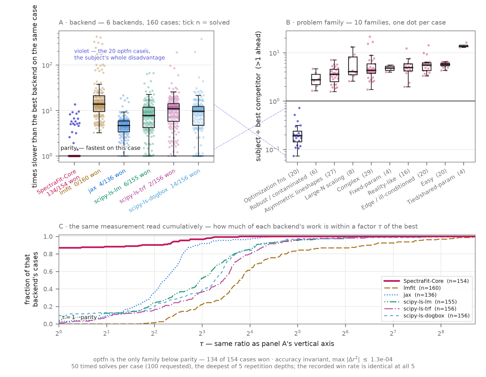
4. Stationarity audit of the benchmark endpoints
Every endpoint of SpectraFit-Core, SciPy trf and lmfit at the common tolerance, 156 cases. Stationary: Gauss-Newton predicted decrease over the components not held, divided by RSS, at most 1e-06; central-difference Jacobian, step 6.06e-06 max(|theta|, 0.001); active bound by the 0.0001 rule. 4 cases excluded (reasons in table.json).
Data: audit-stationarity/table.json, audit-stationarity/table.md
| backend | stationary, interior | stationary, at a bound | success & stationary | success, not stationary | no success, stationary | neither |
|---|---|---|---|---|---|---|
| spectrafit | 128/139 | 17/17 | 144 | 6 | 1 | 5 |
| scipy-ls-trf | 137/148 | 6/8 | 143 | 13 | 0 | 0 |
| lmfit | 144/149 | 7/7 | 151 | 5 | 0 | 0 |
success = the library's own success flag.
| pair | cases | median RSS ratio | < 1 | = 1 | > 1 |
|---|---|---|---|---|---|
| spectrafit/scipy-ls-trf | 156 | 1 | 7 | 135 | 14 |
| spectrafit/lmfit | 156 | 1 | 2 | 133 | 21 |
RSS ratio first/second; = 1 within 1e-6 relative.
| case | category | SFC stat. | SFC GN | SFC success | trf stat. | trf GN | trf success | lmfit stat. | lmfit GN | lmfit success |
|---|---|---|---|---|---|---|---|---|---|---|
| EZ-001 | easy | yes | 8.924e−19 | yes | yes | 4.808e−17 | yes | yes | 9.327e−13 | yes |
| EZ-002 | easy | yes | 1.087e−16 | yes | yes | 7.336e−17 | yes | yes | 2.016e−13 | yes |
| EZ-003 | easy | yes | 2.451e−16 | yes | yes | 1.532e−14 | yes | yes | 3.145e−12 | yes |
| EZ-004 | easy | yes | 2.084e−17 | yes | yes | 8.172e−17 | yes | yes | 5.830e−12 | yes |
| EZ-005 | easy | yes | 2.290e−15 | yes | yes | 2.273e−13 | yes | yes | 1.175e−12 | yes |
| EZ-006 | easy | yes | 2.460e−19 | yes | yes | 6.900e−17 | yes | yes | 2.032e−13 | yes |
| EZ-007 | easy | yes | 2.889e−17 | yes | yes | 3.824e−18 | yes | yes | 4.727e−14 | yes |
| EZ-008 | easy | yes | 6.570e−19 | yes | yes | 7.572e−19 | yes | yes | 8.617e−14 | yes |
| EZ-009 | easy | yes | 3.056e−18 | yes | yes | 3.081e−18 | yes | yes | 1.531e−13 | yes |
| EZ-010 | easy | yes | 6.966e−14 | yes | yes | 5.692e−14 | yes | yes | 6.627e−13 | yes |
| EZ-011 | easy | yes | 1.485e−16 | yes | yes | 1.282e−16 | yes | yes | 1.682e−13 | yes |
| EZ-012 | easy | yes | 6.745e−13 | yes | yes | 5.053e−12 | yes | yes | 2.702e−12 | yes |
| EZ-013 | easy | yes | 3.806e−16 | yes | yes | 4.304e−15 | yes | yes | 1.837e−14 | yes |
| EZ-014 | easy | yes | 2.606e−14 | yes | yes | 2.179e−14 | yes | yes | 1.810e−12 | yes |
| EZ-015 | easy | yes | 2.407e−13 | yes | yes | 4.941e−13 | yes | yes | 8.233e−13 | yes |
| EZ-016 | easy | yes | 3.658e−16 | yes | yes | 1.863e−15 | yes | yes | 7.694e−13 | yes |
| EZ-017 | easy | yes | 2.446e−12 | yes | yes | 1.712e−12 | yes | yes | 5.565e−12 | yes |
| EZ-018 | easy | yes | 2.855e−14 | yes | yes | 6.153e−15 | yes | yes | 1.883e−13 | yes |
| EZ-019 | easy | yes | 9.366e−16 | yes | yes | 8.569e−17 | yes | yes | 1.087e−12 | yes |
| EZ-020 | easy | yes | 2.526e−12 | yes | yes | 1.674e−12 | yes | yes | 1.188e−12 | yes |
| CX-001 | complex | yes | 1.213e−13 | yes | yes | 2.471e−12 | yes | yes | 2.850e−13 | yes |
| CX-002 | complex | yes | 3.036e−11 | yes | yes | 4.107e−13 | yes | yes | 3.276e−13 | yes |
| CX-003 | complex | yes | 1.589e−14 | yes | yes | 1.803e−12 | yes | yes | 1.827e−12 | yes |
| CX-004 | complex | yes | 9.663e−13 | yes | yes | 3.240e−13 | yes | yes | 3.296e−12 | yes |
| CX-005 | complex | yes | 6.833e−12 | yes | yes | 4.411e−11 | yes | yes | 9.727e−11 | yes |
| CX-006 | complex | yes | 8.938e−12 | yes | yes | 2.855e−12 | yes | yes | 3.921e−12 | yes |
| CX-007 | complex | yes | 1.045e−12 | yes | yes | 3.561e−13 | yes | yes | 6.677e−11 | yes |
| CX-008 | complex | yes | 2.981e−12 | yes | yes | 6.075e−12 | yes | yes | 4.228e−11 | yes |
| CX-009 | complex | no | 3.135e−05 | no | yes | 3.578e−12 | yes | no | 4.543e−05 | yes |
| CX-010 | complex | yes | 6.655e−08 | no | yes | 5.056e−07 | yes | yes | 4.343e−10 | yes |
| CX-011 | complex | yes | 1.534e−14 | yes | yes | 2.176e−15 | yes | yes | 3.669e−11 | yes |
| CX-012 | complex | yes | 1.335e−16 | yes | yes | 4.946e−15 | yes | yes | 5.594e−12 | yes |
| CX-013 | complex | yes | 7.169e−12 | yes | yes | 1.115e−11 | yes | yes | 5.827e−11 | yes |
| CX-014 | complex | no | 0.006662 | no | no | 0.006615 | yes | no | 0.006664 | yes |
| CX-015 | complex | no | 0.002873 | no | no | 1.281e−04 | yes | no | 0.002874 | yes |
| CX-016 | complex | yes | 3.847e−12 | yes | yes | 2.861e−10 | yes | yes | 1.314e−09 | yes |
| CX-017 | complex | no | 3.113e−04 | no | no | 3.154e−04 | yes | no | 3.119e−04 | yes |
| CX-018 | complex | yes | 1.697e−11 | yes | yes | 3.263e−09 | yes | yes | 1.367e−09 | yes |
| CX-019 | complex | yes | 2.375e−09 | yes | yes | 3.040e−08 | yes | yes | 1.524e−08 | yes |
| CX-020 | complex | no | 0.007834 | no | no | 0.01219 | yes | no | 0.01885 | yes |
| CX-021 | complex | yes | 3.392e−17 | yes | yes | 3.062e−16 | yes | yes | 8.384e−13 | yes |
| CX-022 | complex | yes | 2.868e−12 | yes | yes | 1.486e−12 | yes | yes | 1.613e−11 | yes |
| CX-023 | complex | yes | 1.241e−13 | yes | yes | 3.820e−13 | yes | yes | 1.083e−10 | yes |
| CX-024 | complex | yes | 1.132e−10 | yes | yes | 2.038e−11 | yes | yes | 3.389e−11 | yes |
| CX-025 | complex | yes | 3.107e−12 | yes | yes | 7.270e−13 | yes | yes | 2.054e−11 | yes |
| CX-026 | complex | yes | 2.128e−18 | yes | yes | 9.333e−17 | yes | yes | 2.133e−11 | yes |
| CX-027 | complex | yes | 3.596e−14 | yes | yes | 5.819e−14 | yes | yes | 1.991e−11 | yes |
| CX-028 | complex | yes | 9.557e−12 | yes | yes | 1.049e−13 | yes | yes | 1.934e−11 | yes |
| CX-029 | complex | yes | 4.676e−12 | yes | yes | 1.125e−12 | yes | yes | 4.996e−11 | yes |
| CX-030 | complex | yes | 1.691e−14 | yes | yes | 2.809e−14 | yes | yes | 1.218e−11 | yes |
| CX-031 | complex | yes | 2.200e−13 | yes | yes | 3.860e−12 | yes | yes | 2.003e−11 | yes |
| CX-032 | complex | yes | 7.316e−15 | yes | yes | 1.857e−14 | yes | yes | 1.749e−13 | yes |
| CX-033 | complex | yes | 5.573e−11 | yes | yes | 7.376e−11 | yes | yes | 5.754e−12 | yes |
| CX-034 | complex | yes | 7.044e−13 | yes | yes | 1.047e−12 | yes | yes | 7.067e−13 | yes |
| CX-035 | complex | yes | 1.263e−11 | yes | yes | 1.337e−12 | yes | yes | 8.371e−11 | yes |
| RL-001 | reality | yes | 6.849e−15 | yes | yes | 6.737e−13 | yes | yes | 3.705e−12 | yes |
| RL-002 | reality | yes | 4.592e−13 | yes | yes | 1.310e−13 | yes | yes | 2.163e−13 | yes |
| RL-003 | reality | yes | 6.209e−13 | yes | yes | 1.260e−12 | yes | yes | 2.704e−12 | yes |
| RL-004 | reality | yes | 1.198e−12 | yes | yes | 7.279e−12 | yes | yes | 6.538e−13 | yes |
| RL-005 | reality | yes | 6.839e−14 | yes | yes | 5.108e−16 | yes | yes | 1.250e−13 | yes |
| RL-006 | reality | yes | 4.255e−11 | yes | yes | 9.816e−12 | yes | yes | 1.235e−12 | yes |
| RL-007 | reality | yes | 2.108e−15 | yes | yes | 2.837e−12 | yes | yes | 6.512e−12 | yes |
| RL-008 | reality | yes | 1.020e−13 | yes | yes | 1.365e−12 | yes | yes | 8.809e−12 | yes |
| RL-009 | reality | yes | 4.769e−15 | yes | yes | 2.107e−14 | yes | yes | 5.173e−14 | yes |
| RL-010 | reality | yes | 5.699e−11 | yes | yes | 1.505e−10 | yes | yes | 7.264e−11 | yes |
| RL-011 | reality | yes | 1.224e−16 | yes | yes | 3.771e−16 | yes | yes | 2.674e−17 | yes |
| RL-012 | reality | yes | 2.055e−15 | yes | yes | 8.266e−16 | yes | yes | 2.048e−14 | yes |
| RL-013 | reality | yes | 1.819e−14 | yes | yes | 3.565e−16 | yes | yes | 8.642e−16 | yes |
| RL-014 | reality | yes | 9.375e−15 | yes | yes | 1.661e−14 | yes | yes | 4.904e−12 | yes |
| RL-015 | reality | yes | 6.119e−16 | yes | yes | 6.007e−18 | yes | yes | 9.502e−13 | yes |
| RL-016 | reality | yes | 1.394e−12 | yes | yes | 5.974e−13 | yes | yes | 1.054e−11 | yes |
| OF-001 | optfn | yes | 2.398e−11 | yes | yes | 4.898e−13 | yes | yes | 9.568e−12 | yes |
| OF-002 | optfn | yes | 1.630e−10 | yes | yes | 1.150e−08 | yes | yes | 4.208e−12 | yes |
| OF-003 | optfn | yes | 1.412e−10 | yes | no | 0.8542 | yes | yes | 1.086e−09 | yes |
| OF-004 | optfn | yes | 1.552e−11 | yes | no | 0.9177 | yes | yes | 5.135e−12 | yes |
| OF-005 | optfn | yes | 5.093e−09 | yes | no | 0.001962 | yes | yes | 7.760e−10 | yes |
| OF-006 | optfn | yes | 1.639e−12 | yes | yes | 1.609e−14 | yes | yes | 1.401e−10 | yes |
| OF-007 | optfn | yes | 4.527e−15 | yes | yes | 4.048e−09 | yes | yes | 9.161e−11 | yes |
| OF-008 | optfn | yes | 3.174e−09 | yes | no | 0.9411 | yes | yes | 1.021e−08 | yes |
| OF-009 | optfn | yes | 4.542e−12 | yes | yes | 1.093e−07 | yes | yes | 2.642e−10 | yes |
| OF-010 | optfn | yes | 7.411e−11 | yes | yes | 9.693e−09 | yes | yes | 3.237e−10 | yes |
| OF-011 | optfn | yes | 1.253e−13 | yes | no | 0.01548 | yes | yes | 1.520e−10 | yes |
| OF-012 | optfn | yes | 1.382e−09 | yes | yes | 9.053e−10 | yes | yes | 1.427e−10 | yes |
| OF-013 | optfn | yes | 4.977e−09 | yes | no | 0.003925 | yes | yes | 3.678e−12 | yes |
| OF-014 | optfn | yes | 4.714e−11 | yes | yes | 4.922e−09 | yes | yes | 1.630e−10 | yes |
| OF-015 | optfn | yes | 5.737e−10 | yes | yes | 3.135e−08 | yes | yes | 2.829e−13 | yes |
| OF-016 | optfn | yes | 1.023e−10 | yes | no | 0.9193 | yes | yes | 3.245e−10 | yes |
| OF-017 | optfn | yes | 6.348e−10 | yes | yes | 6.067e−10 | yes | yes | 7.920e−11 | yes |
| OF-018 | optfn | yes | 1.023e−10 | yes | no | 0.9193 | yes | yes | 3.245e−10 | yes |
| OF-019 | optfn | yes | 1.178e−11 | yes | yes | 1.281e−08 | yes | yes | 6.341e−11 | yes |
| OF-020 | optfn | yes | 1.992e−11 | yes | no | 0.9435 | yes | yes | 2.304e−10 | yes |
| SC-001 | scaling | yes | 5.408e−16 | yes | yes | 2.501e−16 | yes | yes | 4.115e−12 | yes |
| SC-002 | scaling | yes | 3.941e−13 | yes | yes | 1.184e−14 | yes | yes | 3.495e−12 | yes |
| SC-003 | scaling | yes | 4.193e−11 | yes | yes | 6.980e−14 | yes | yes | 1.033e−12 | yes |
| SC-004 | scaling | yes | 1.432e−12 | yes | yes | 1.464e−11 | yes | yes | 4.602e−12 | yes |
| SC-005 | scaling | yes | 7.277e−12 | yes | yes | 2.175e−15 | yes | yes | 3.458e−12 | yes |
| SC-006 | scaling | yes | 1.161e−13 | yes | yes | 3.762e−14 | yes | yes | 1.687e−11 | yes |
| SC-007 | scaling | yes | 1.015e−14 | yes | yes | 2.964e−12 | yes | yes | 4.553e−12 | yes |
| SC-008 | scaling | yes | 8.205e−14 | yes | yes | 2.519e−13 | yes | yes | 1.330e−11 | yes |
| ED-001 | edge | yes | 1.671e−11 | yes | yes | 2.525e−09 | yes | yes | 7.301e−10 | yes |
| ED-002 | edge | yes | 1.472e−13 | yes | yes | 1.796e−16 | yes | yes | 1.023e−12 | yes |
| ED-003 | edge | yes | 1.856e−11 | yes | yes | 2.424e−12 | yes | yes | 1.091e−11 | yes |
| ED-004 | edge | yes | 6.969e−16 | yes | yes | 9.062e−14 | yes | yes | 2.711e−12 | yes |
| ED-005 | edge | yes | 4.050e−13 | yes | yes | 8.632e−14 | yes | yes | 5.198e−13 | yes |
| ED-006 | edge | yes | 1.031e−13 | yes | yes | 1.494e−11 | yes | yes | 2.714e−12 | yes |
| ED-007 | edge | yes | 8.376e−11 | yes | yes | 6.207e−11 | yes | yes | 2.186e−12 | yes |
| ED-008 | edge | yes | 5.040e−13 | yes | yes | 4.092e−13 | yes | yes | 1.509e−11 | yes |
| ED-009 | edge | yes | 1.661e−14 | yes | yes | 5.546e−15 | yes | yes | 4.023e−12 | yes |
| ED-010 | edge | yes | 9.290e−10 | yes | yes | 9.674e−10 | yes | yes | 1.854e−09 | yes |
| ED-011 | edge | yes | 1.238e−12 | yes | yes | 9.562e−14 | yes | yes | 6.031e−14 | yes |
| ED-012 | edge | yes | 1.263e−14 | yes | yes | 1.377e−12 | yes | yes | 6.565e−13 | yes |
| ED-013 | edge | yes | 7.716e−13 | yes | yes | 3.623e−12 | yes | yes | 5.988e−14 | yes |
| ED-014 | edge | yes | 8.861e−14 | yes | yes | 2.866e−16 | yes | yes | 2.857e−13 | yes |
| ED-015 | edge | yes | 1.966e−14 | yes | yes | 2.860e−12 | yes | yes | 1.234e−13 | yes |
| ED-016 | edge | yes | 3.619e−13 | yes | yes | 6.019e−10 | yes | yes | 2.066e−10 | yes |
| ED-017 | edge | yes | 3.040e−16 | yes | yes | 1.511e−15 | yes | yes | 2.008e−12 | yes |
| ED-018 | edge | yes | 1.097e−13 | yes | yes | 1.324e−11 | yes | yes | 9.071e−13 | yes |
| ED-019 | edge | yes | 1.898e−12 | yes | yes | 3.384e−13 | yes | yes | 1.340e−12 | yes |
| ED-020 | edge | yes | 5.113e−11 | yes | yes | 1.390e−10 | yes | yes | 2.733e−09 | yes |
| LS-001 | lineshapes | yes | 1.477e−15 | yes | yes | 3.965e−15 | yes | yes | 1.276e−15 | yes |
| LS-002 | lineshapes | yes | 4.418e−15 | yes | yes | 7.384e−15 | yes | yes | 6.364e−13 | yes |
| LS-003 | lineshapes | yes | 2.788e−14 | yes | yes | 9.191e−13 | yes | yes | 4.624e−13 | yes |
| LS-004 | lineshapes | yes | 1.460e−15 | yes | yes | 2.315e−15 | yes | yes | 3.849e−14 | yes |
| LS-005 | lineshapes | yes | 2.724e−12 | yes | yes | 3.111e−12 | yes | yes | 4.179e−12 | yes |
| LS-006 | lineshapes | yes | 2.344e−13 | yes | yes | 1.628e−12 | yes | yes | 5.419e−12 | yes |
| LS-007 | lineshapes | yes | 1.478e−10 | yes | yes | 1.962e−10 | yes | yes | 1.381e−10 | yes |
| LS-008 | lineshapes | yes | 2.138e−13 | yes | yes | 4.879e−13 | yes | yes | 1.457e−11 | yes |
| LS-009 | lineshapes | yes | 1.061e−13 | yes | yes | 2.244e−14 | yes | yes | 1.221e−12 | yes |
| LS-010 | lineshapes | yes | 1.118e−14 | yes | yes | 2.381e−16 | yes | yes | 9.301e−12 | yes |
| LS-011 | lineshapes | yes | 1.980e−15 | yes | yes | 2.281e−14 | yes | yes | 9.801e−13 | yes |
| LS-012 | lineshapes | yes | 3.111e−13 | yes | yes | 1.285e−13 | yes | yes | 1.334e−14 | yes |
| LS-013 | lineshapes | yes | 2.037e−17 | yes | yes | 7.488e−16 | yes | yes | 4.616e−14 | yes |
| LS-014 | lineshapes | yes | 4.038e−14 | yes | yes | 2.500e−13 | yes | yes | 4.584e−13 | yes |
| LS-015 | lineshapes | yes | 9.452e−15 | yes | yes | 3.566e−15 | yes | yes | 1.983e−12 | yes |
| LS-016 | lineshapes | yes | 5.086e−14 | yes | yes | 3.669e−12 | yes | yes | 1.330e−12 | yes |
| LS-017 | lineshapes | yes | 4.146e−14 | yes | yes | 4.191e−14 | yes | yes | 5.117e−13 | yes |
| LS-018 | lineshapes | yes | 6.464e−16 | yes | yes | 3.194e−16 | yes | yes | 6.292e−13 | yes |
| LS-019 | lineshapes | yes | 1.504e−17 | yes | yes | 3.079e−17 | yes | yes | 4.078e−22 | yes |
| LS-020 | lineshapes | yes | 1.824e−14 | yes | yes | 1.415e−13 | yes | yes | 1.720e−13 | yes |
| LS-021 | lineshapes | yes | 9.073e−18 | yes | yes | 4.966e−18 | yes | yes | 7.876e−14 | yes |
| LS-022 | lineshapes | yes | 1.657e−18 | yes | yes | 1.504e−15 | yes | yes | 4.162e−15 | yes |
| LS-023 | lineshapes | yes | 5.781e−12 | yes | yes | 1.711e−12 | yes | yes | 2.686e−12 | yes |
| LS-024 | lineshapes | yes | 3.386e−13 | yes | yes | 1.682e−11 | yes | yes | 1.754e−11 | yes |
| LS-025 | lineshapes | yes | 1.722e−09 | yes | yes | 1.229e−09 | yes | yes | 1.237e−09 | yes |
| LS-026 | lineshapes | yes | 2.555e−13 | yes | yes | 3.543e−13 | yes | yes | 1.649e−13 | yes |
| LS-027 | lineshapes | yes | 1.479e−10 | yes | yes | 3.557e−12 | yes | yes | 1.234e−11 | yes |
| FX-001 | fixed | yes | 6.656e−17 | yes | yes | 2.583e−14 | yes | yes | 8.691e−13 | yes |
| FX-002 | fixed | yes | 6.123e−23 | yes | yes | 3.954e−19 | yes | yes | 6.083e−17 | yes |
| FX-003 | fixed | yes | 3.596e−13 | yes | yes | 2.791e−15 | yes | yes | 1.414e−13 | yes |
| FX-004 | fixed | yes | 1.790e−13 | yes | yes | 4.031e−12 | yes | yes | 6.738e−12 | yes |
| RB-001 | robust | no | 0.03773 | yes | yes | 3.704e−09 | yes | yes | 3.467e−09 | yes |
| RB-002 | robust | no | 0.04929 | yes | yes | 1.934e−08 | yes | yes | 3.395e−09 | yes |
| RB-003 | robust | no | 0.04467 | yes | yes | 1.354e−09 | yes | yes | 2.826e−11 | yes |
| RB-004 | robust | no | 0.01651 | yes | yes | 1.669e−08 | yes | yes | 5.164e−09 | yes |
| RB-005 | robust | no | 0.02692 | yes | yes | 6.970e−09 | yes | yes | 3.412e−09 | yes |
| RB-006 | robust | no | 0.005801 | yes | yes | 3.506e−09 | yes | yes | 3.131e−10 | yes |
5. Bounded Fe L2,3 fit from 500 far starts
The fit of scripts/fig_eels.py (Fe L2,3 edge of Fe2O3, 700 to 735 eV) from 500 far starts (numpy default_rng([20261110, 0]), fig_eels.sample_start), the same starts for the free model (34 free parameters) and the constrained model (four relationships, 30 free). Stationary: Gauss-Newton measure at most 1e-06 within the bounds. Best known minimum: RSS 20737458 (free), 22377888.24 (constrained); reaching it = within 1e-06 relative. D = 21934809.13, the RSS of the free fit from the default start.
Data: eels-far/summary.json, eels-far/eels_far.json
| model | solver | fits | stationary | reported success | best known | below D, stationary | amplitudes at 0 (fits/amplitudes) | step_l3 q25 | median | q75 | lowest stationary RSS |
|---|---|---|---|---|---|---|---|---|---|---|---|
| free | SpectraFit-Core (lm) | 500 | 360 | 360 | 0 | 7 | 466/1136 | 0 | 1262 | 2285 | 2.146e+07 |
| free | SciPy trf | 500 | 115 | 189 | 1 | 16 | 165/183 | 2.220e−21 | 621.9 | 1371 | 2.074e+07 |
| free | lmfit leastsq | 500 | 9 | 61 | 0 | 0 | 439/867 | 636.7 | 638.3 | 1026 | 2.193e+07 |
| free | lmfit leastsq, common tol. | 500 | 9 | 60 | 0 | 0 | 439/867 | 636.7 | 637.7 | 1025 | 2.193e+07 |
| constrained | SpectraFit-Core (lm) | 500 | 402 | 401 | 6 | – | 414/882 | 1757 | 1807 | 1952 | 2.238e+07 |
| constrained | SciPy trf | 500 | 100 | 316 | 25 | – | 65/72 | 1701 | 1714 | 1714 | 2.238e+07 |
| constrained | lmfit leastsq | 500 | 29 | 113 | 9 | – | 382/692 | 1701 | 1707 | 1762 | 2.238e+07 |
| constrained | lmfit leastsq, common tol. | 500 | 30 | 113 | 9 | – | 382/692 | 1701 | 1706 | 1762 | 2.238e+07 |
step_l3 quartiles over the stationary endpoints.
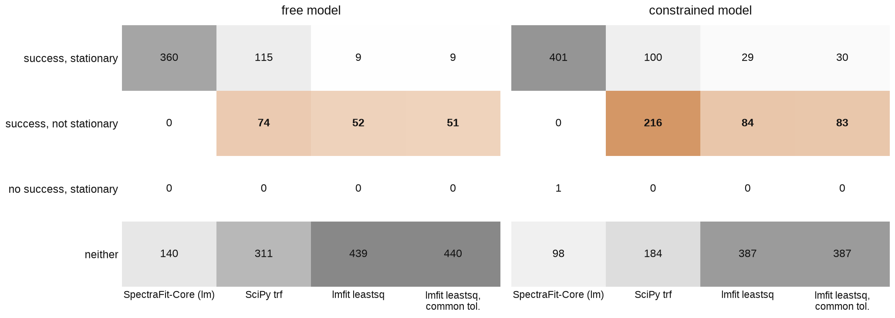
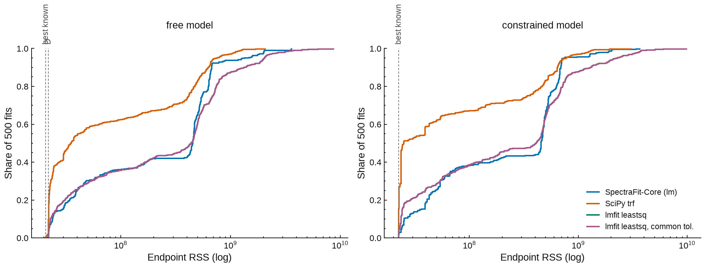
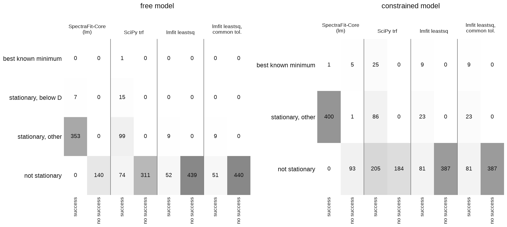
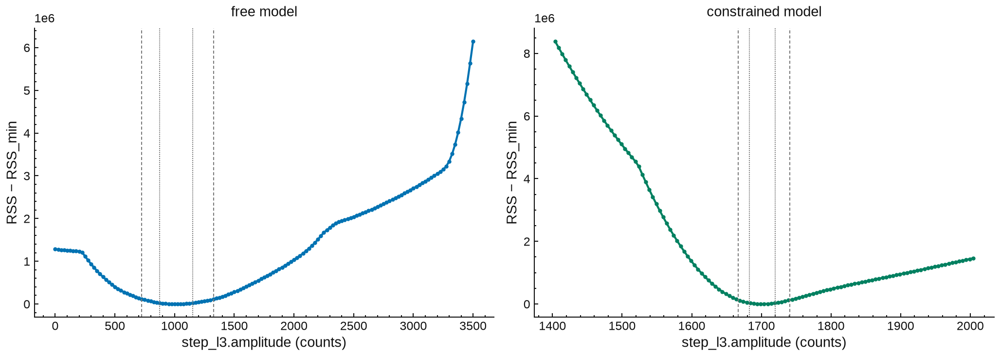
Data: eels_fe2o3.json
| model | level | lower | upper | closed | boundary affected |
|---|---|---|---|---|---|
| free | 68 | 875 | 1150 | yes | yes |
| free | 95 | 725 | 1325 | yes | yes |
| constrained | 68 | 1683 | 1720 | yes | yes |
| constrained | 95 | 1667 | 1741 | yes | yes |
Lowest-RSS stationary endpoint per model over all solvers: condition numbers of the central-difference Jacobian J over the free parameters and of J^T J, and the components held at a bound.
| model | solver | start | RSS | step_l3 | GN | cond(J) | cond(J^T J) | held |
|---|---|---|---|---|---|---|---|---|
| free | SciPy trf | 229 | 2.074e+07 | 1004 | 1.189e−09 | 1.349e+06 | 1.820e+12 | step_l3.sigma, step_l2.sigma, l3_e.center, l2_c.center |
| constrained | lmfit leastsq, common tol. | 496 | 2.238e+07 | 1701 | 4.950e−09 | 2.304e+06 | 5.308e+12 | l2_c.center |
The reported fits of scripts/fig_eels.py (SpectraFit-Core lm; free fit from the start with the lower RSS, constrained fit from the default start): condition numbers as the wheel reports them (FitResult.condition_number is cond(J^T J); cond(J) is its square root) and the components at a bound by the 1e-4 rule of fig_eels.py.
Data: eels_fe2o3.json
| model | start | RSS | step_l3 | stderr | cond(J) | cond(J^T J) | at a bound |
|---|---|---|---|---|---|---|---|
| free | default | 2.193e+07 | 637 | 737.3 | 2.559e+06 | 6.549e+12 | step_l3.sigma (lower), l3_e.center (lower) |
| constrained | default | 2.238e+07 | 1701 | 33.9 | 2.297e+06 | 5.274e+12 | l2_c.center (lower) |
6. Example gallery
Every script of examples/ (the gallery of spectrafit-core, git tree 9f99621fdc8b), run unchanged with the installed wheel; 17 ran, 0 failed. Drift check against the source: equal. Per fit: solver, success, stationarity (Gauss-Newton measure, the definitions of section 4), RSS and parameters with standard errors; joint fits of several datasets have no stationarity value.
Data: gallery/gallery.json
examples/3d_fitting.py: ok, 1.1 s, 1 fits.
| fit | call | solver | success | stationary | GN | RSS | cond(J^T J) | time | free parameters (value ± stderr) |
|---|---|---|---|---|---|---|---|---|---|
| 1 | fit | default | yes | n/a | – | – | 59.32 | 4.0 ms | g.center_0 −1.489 ± 0.0065; g.amplitude 5.975 ± 0.027; g.sigma_0 1.605 ± 0.0065; g.center_1 1.006 ± 0.0085; g.center_2 0.4999 ± 0.0048; g.sigma_2 1.192 ± 0.0046… |
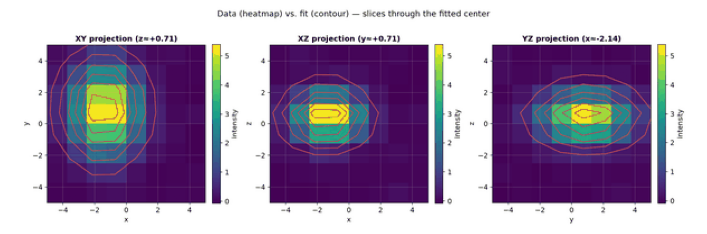
examples/_snippets/stacked_slices.py: ok, 0.2 s, 1 fits.
| fit | call | solver | success | stationary | GN | RSS | cond(J^T J) | time | free parameters (value ± stderr) |
|---|---|---|---|---|---|---|---|---|---|
| 1 | GlobalFitGraph.fit | default | yes | n/a | – | – | 53.95 | 3.9 ms | peak_s0.center 1.501 ± 0.0011; peak_s0.amplitude 1.499 ± 0.0054; peak_s2.center 1.501 ± –; peak_s1.center 1.501 ± –; peak_s1.amplitude 2.504 ± 0.0058; peak_s1.s… |
examples/bounded_fitting.py: ok, 0.8 s, 3 fits.
| fit | call | solver | success | stationary | GN | RSS | cond(J^T J) | time | free parameters (value ± stderr) |
|---|---|---|---|---|---|---|---|---|---|
| 1 | fit | default | yes | yes | 1.223e−10 | 1.397 | 251.8 | 2.6 ms | peak.center −1.193 ± 0.57; peak.amplitude −0.05348 ± 0.036 |
| 2 | fit | lm | yes | yes | 2.192e−09 | 1.392 | 225.1 | 0.3 ms | peak.amplitude 0.05662 ± 0.036; peak.center 1.515 ± 0.54 |
| 3 | fit | trf | yes | yes | 2.192e−09 | 1.392 | 225.1 | 0.2 ms | peak.amplitude 0.05662 ± 0.036; peak.center 1.515 ± 0.54 |
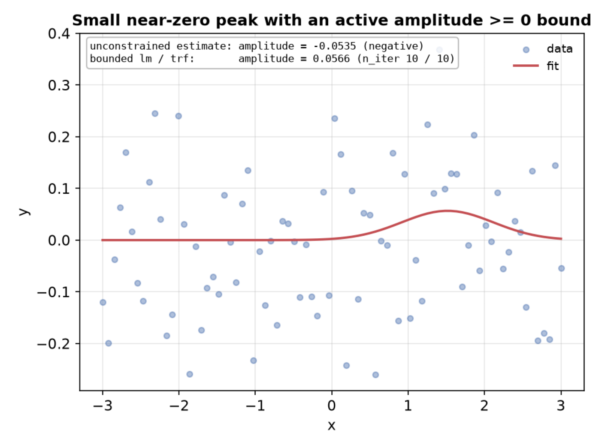
examples/confidence_intervals.py: ok, 0.9 s, 1 fits.
| fit | call | solver | success | stationary | GN | RSS | cond(J^T J) | time | free parameters (value ± stderr) |
|---|---|---|---|---|---|---|---|---|---|
| 1 | fit | default | yes | yes | 1.091e−17 | 0.2809 | 17.82 | 3.2 ms | peak.center 0.4973 ± 0.0064; peak.sigma 0.8048 ± 0.0084; peak.amplitude 1.987 ± 0.015; bg.c 0.09728 ± 0.0098 |
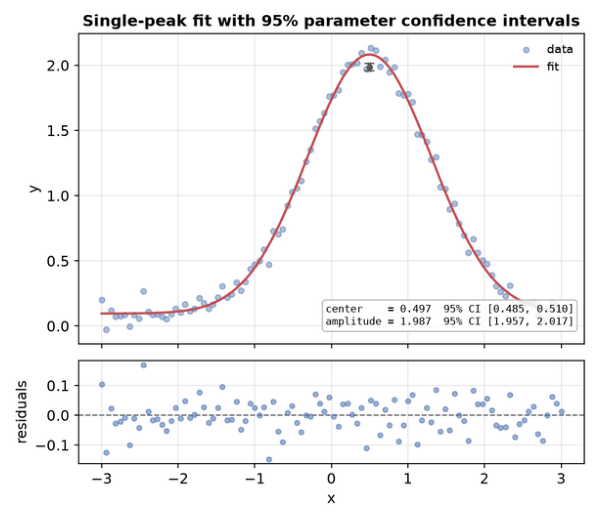
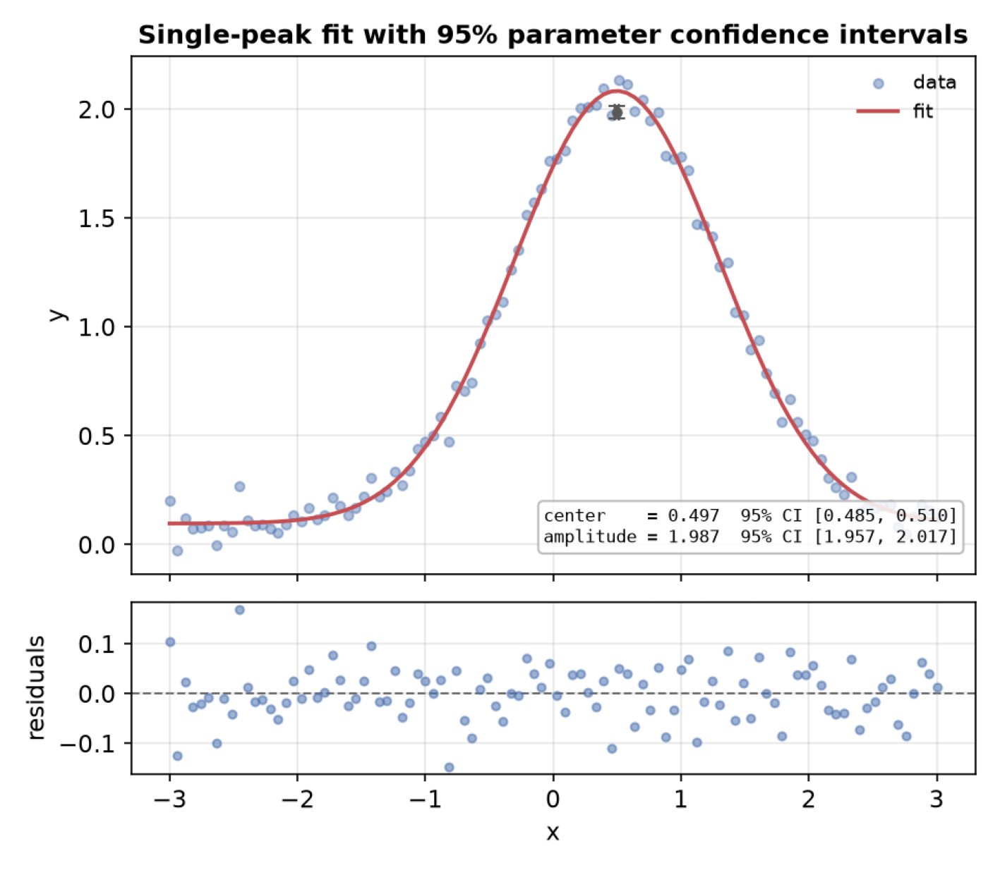
examples/failed_fit.py: ok, 1.0 s, 3 fits.
| fit | call | solver | success | stationary | GN | RSS | cond(J^T J) | time | free parameters (value ± stderr) |
|---|---|---|---|---|---|---|---|---|---|
| 1 | fit | lm | no | no | 1.069e−05 | 190 | 739 | 3.4 ms | peak.sigma 0.0497 ± 30; peak.center −3.9 ± 24; peak.amplitude −0.003191 ± 1.5 |
| 2 | fit | lm | yes | yes | 2.994e−11 | 190 | 5.612 | 0.4 ms | peak.amplitude −0.08204 ± 0.88; peak.sigma 0.1198 ± 1.5; peak.center −2.735 ± 1.5 |
| 3 | fit | global | yes | yes | 2.392e−12 | 0.2285 | 16.84 | 3.3 ms | peak.center 0.2978 ± 0.0036; peak.amplitude 2.998 ± 0.012; peak.sigma 0.801 ± 0.0036 |
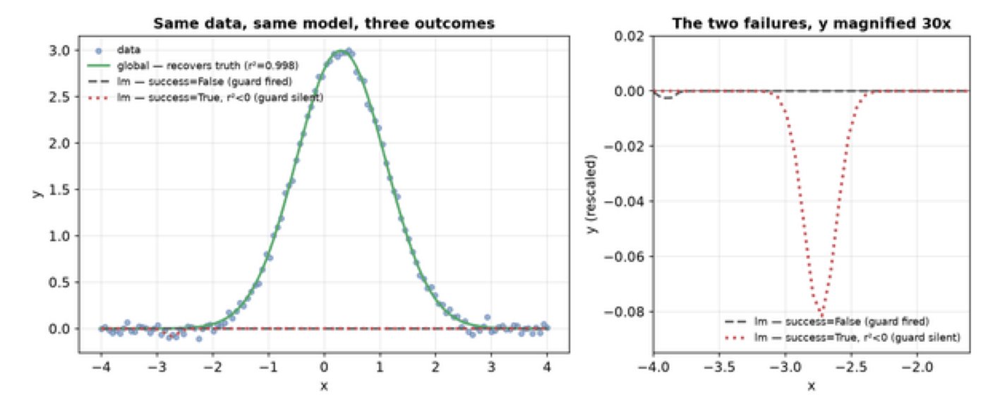
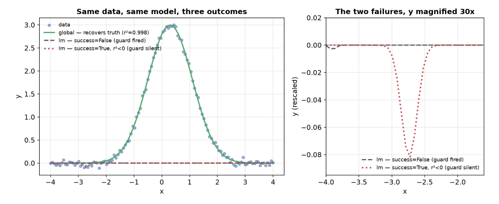
examples/fitting.py: ok, 0.8 s, 1 fits.
| fit | call | solver | success | stationary | GN | RSS | cond(J^T J) | time | free parameters (value ± stderr) |
|---|---|---|---|---|---|---|---|---|---|
| 1 | fit | default | yes | yes | 8.569e−16 | 0.1457 | 17.97 | 3.4 ms | peak.amplitude 2.004 ± 0.011; peak.sigma 0.8056 ± 0.006; peak.center 0.4948 ± 0.0046; bg.c 0.09155 ± 0.0071 |
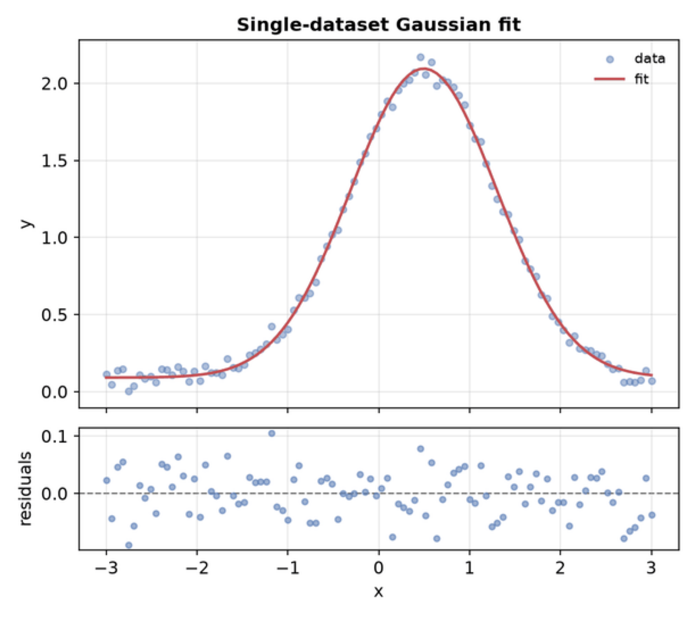
examples/fixed_params.py: ok, 0.8 s, 2 fits.
| fit | call | solver | success | stationary | GN | RSS | cond(J^T J) | time | free parameters (value ± stderr) |
|---|---|---|---|---|---|---|---|---|---|
| 1 | fit | default | yes | yes | 4.881e−19 | 0.2687 | 10.49 | 3.0 ms | peak.sigma 0.6982 ± 0.0047; peak.amplitude 2.012 ± 0.012; peak.center 0.5018 ± 0.0047 |
| 2 | fit | default | yes | yes | 6.442e−18 | 0.2686 | 18.98 | 0.3 ms | peak.sigma 0.6983 ± 0.0059; peak.center 0.5018 ± 0.0048; peak.amplitude 2.012 ± 0.013; bg.c 0.3497 ± 0.0071 |
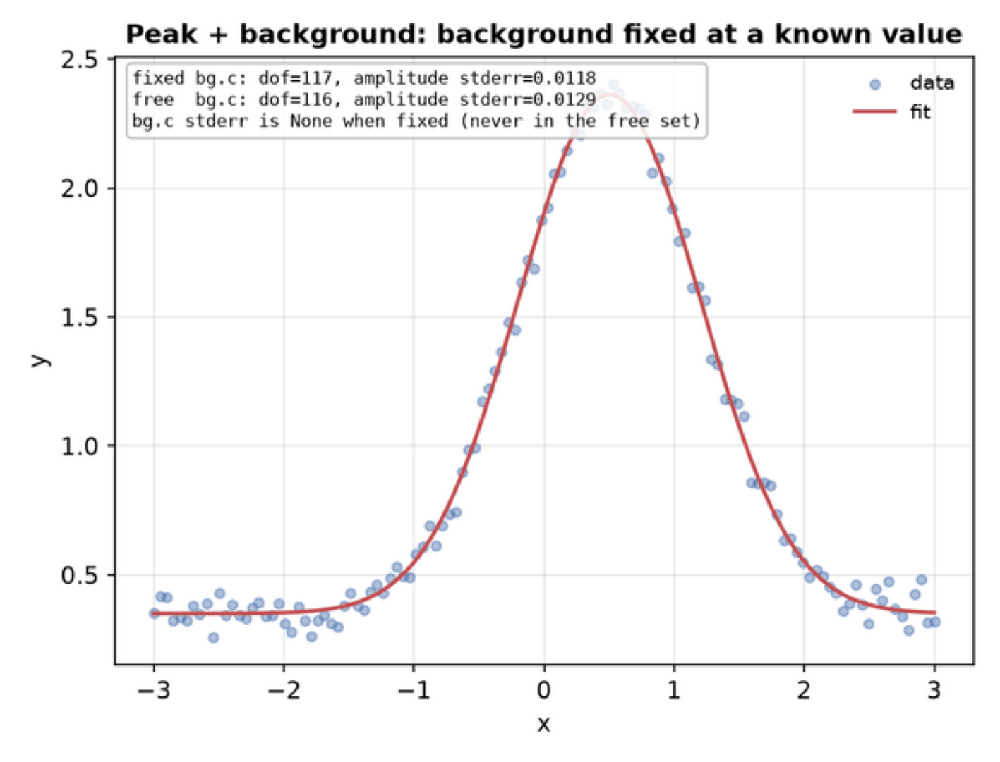
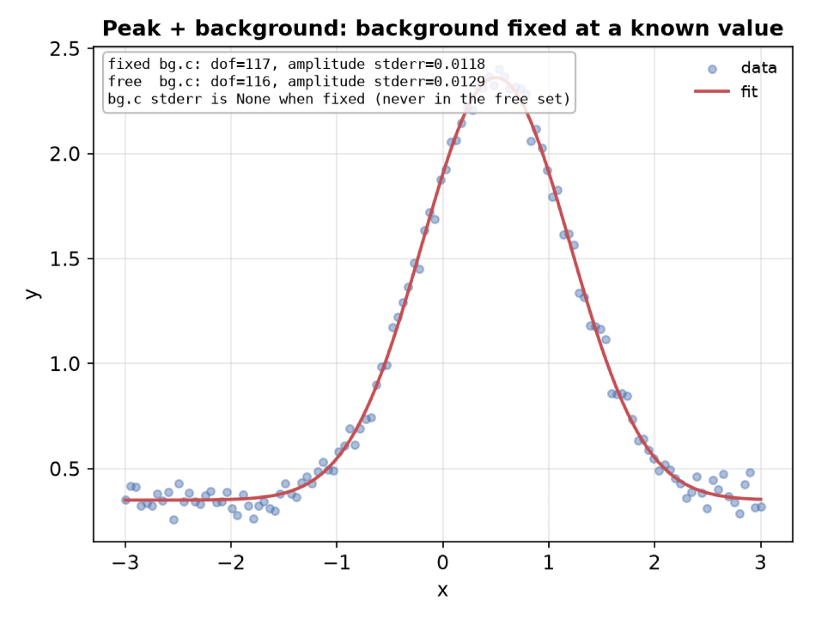
examples/global_optimizer.py: ok, 0.8 s, 2 fits.
| fit | call | solver | success | stationary | GN | RSS | cond(J^T J) | time | free parameters (value ± stderr) |
|---|---|---|---|---|---|---|---|---|---|
| 1 | fit | lm | no | no | 0.4582 | 66.9 | 5.536e+18 | 3.8 ms | p2.sigma 5.325 ± –; p2.amplitude 0.2692 ± –; p1.sigma 5.325 ± –; p1.center −1.684 ± –; p1.amplitude 0.2692 ± –; p2.center −1.684 ± – |
| 2 | fit | global | yes | yes | 4.268e−13 | 0.4942 | 14.17 | 25.2 ms | p2.sigma 0.6072 ± 0.0074; p1.sigma 0.6003 ± 0.0051; p2.center 2.999 ± 0.0074; p1.amplitude 2 ± 0.015; p1.center −2.995 ± 0.0051; p2.amplitude 1.393 ± 0.015 |
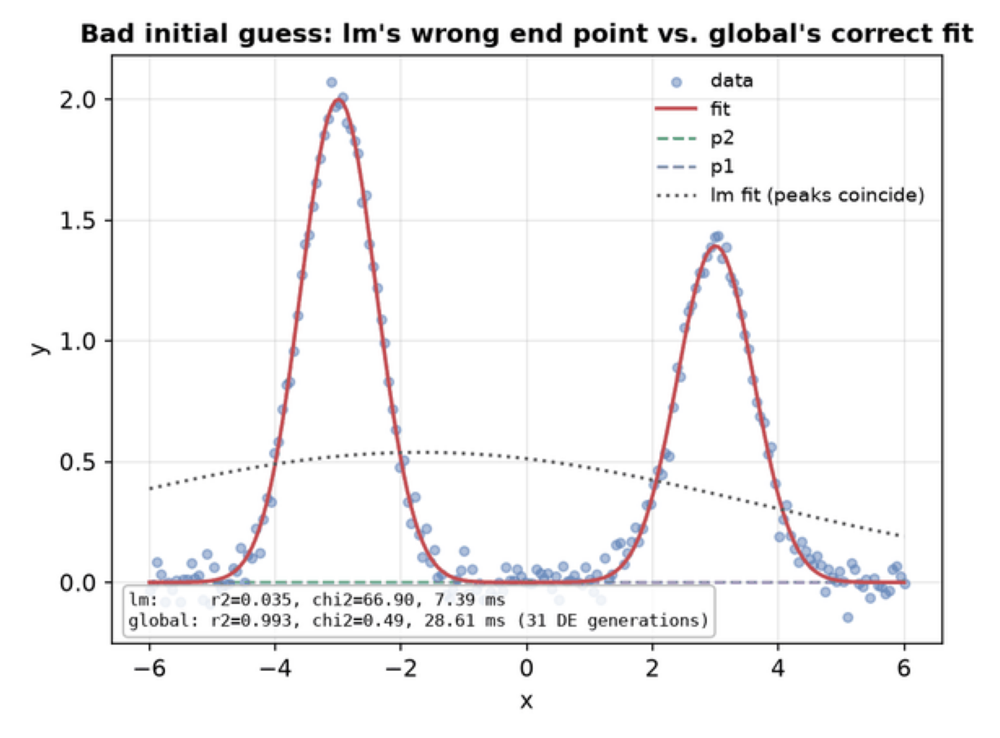
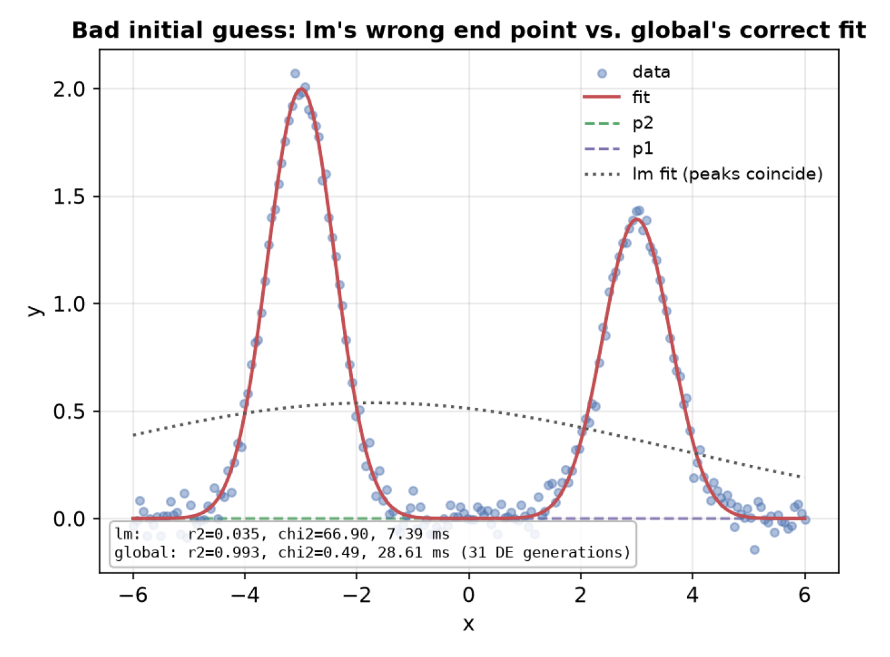
examples/misspecified_model.py: ok, 1.2 s, 3 fits.
| fit | call | solver | success | stationary | GN | RSS | cond(J^T J) | time | free parameters (value ± stderr) |
|---|---|---|---|---|---|---|---|---|---|
| 1 | fit | lm | yes | yes | 9.440e−10 | 5.455e+09 | 9.924e+07 | 3.2 ms | p0.center 711.1 ± 0.076; p0.amplitude 2.367e+04 ± 6.4e+02; p0.sigma 2.449 ± 0.079 |
| 2 | fit | lm | yes | yes | 9.607e−10 | 1.090e+09 | 3.502e+09 | 0.8 ms | p0.center 710.9 ± 0.015; p0.amplitude 2.295e+04 ± 7.1e+02; p1.center 711.6 ± 0.094; p1.sigma 3.935 ± 0.13; p1.amplitude 1.488e+04 ± 3.6e+02; p0.sigma 0.4566 ± 0… |
| 3 | fit | lm | no | no | 3.747e−05 | 5.120e+08 | 2.017e+12 | 9.1 ms | p0.center 710.8 ± 0.012; p0.gamma 0.001 ± 0.31; p1.amplitude 1.209e+04 ± 9.8e+03; p2.center 713.5 ± 4.1; p2.amplitude 1.023e+04 ± 5.3e+03; p1.center 710.8 ± 0.0… |
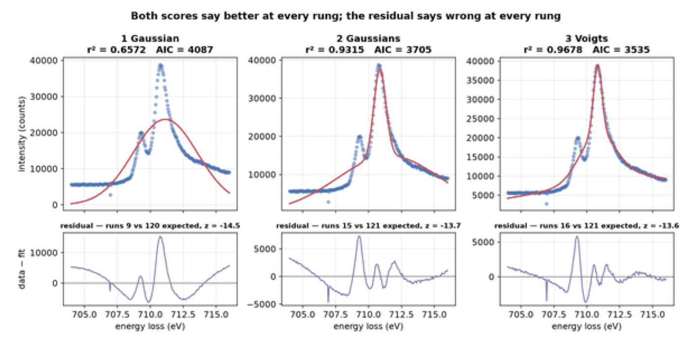
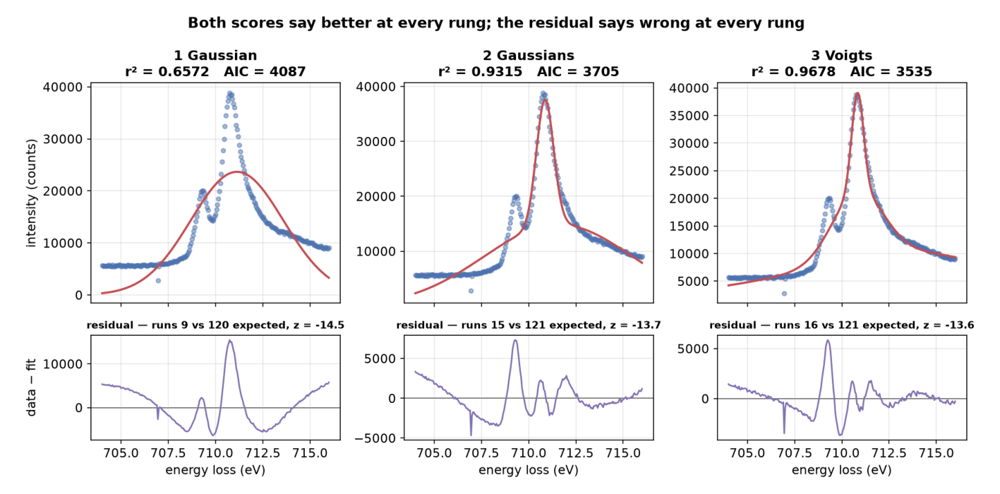
examples/multi_dataset_1d.py: ok, 0.9 s, 1 fits.
| fit | call | solver | success | stationary | GN | RSS | cond(J^T J) | time | free parameters (value ± stderr) |
|---|---|---|---|---|---|---|---|---|---|
| 1 | GlobalFitGraph.fit | default | yes | n/a | – | – | 74.15 | 7.2 ms | pk_s1.center 6.001 ± 5.6e−04; pk_s0.center 3 ± 9.8e−04; pk_s1.amplitude 3.497 ± 0.0033; pk_s0.amplitude 2.007 ± 0.0029; pk_s1.sigma 0.5 ± –; pk_s0.sigma 0.5 ± 4… |
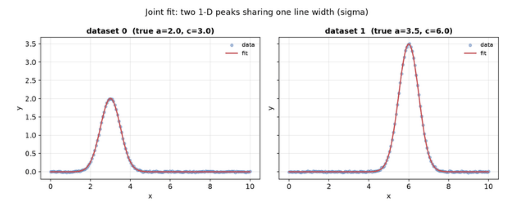
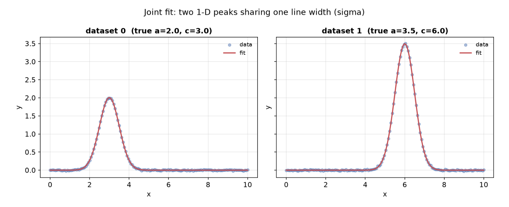
examples/multi_dataset_2d.py: ok, 1.1 s, 1 fits.
| fit | call | solver | success | stationary | GN | RSS | cond(J^T J) | time | free parameters (value ± stderr) |
|---|---|---|---|---|---|---|---|---|---|
| 1 | GlobalFitGraph.fit | default | yes | n/a | – | – | 175.2 | 9.0 ms | pk_s2.sigma_y 0.8989 ± –; pk_s0.sigma_x 1.197 ± 0.0026; pk_s2.center_x −0.9978 ± –; pk_s1.sigma_x 1.197 ± –; pk_s1.center_y 1.502 ± –; pk_s2.sigma_x 1.197 ± –; … |
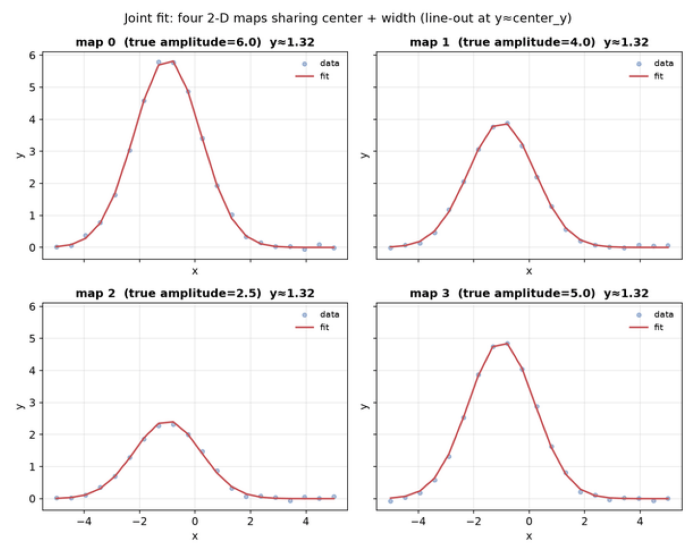
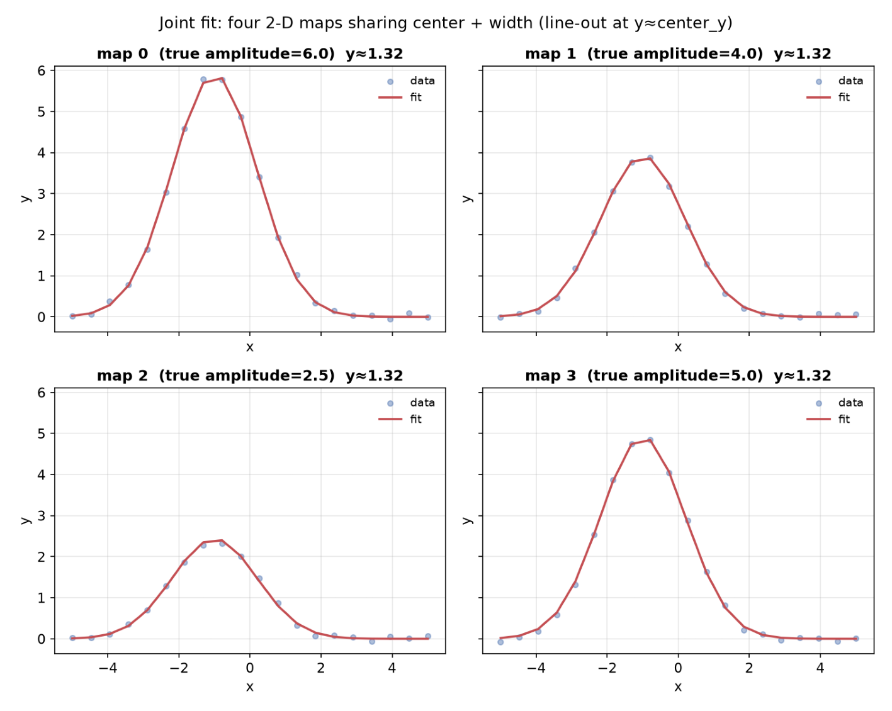
examples/robust_fitting.py: ok, 0.8 s, 2 fits.
| fit | call | solver | success | stationary | GN | RSS | cond(J^T J) | time | free parameters (value ± stderr) |
|---|---|---|---|---|---|---|---|---|---|
| 1 | fit | lm | yes | yes | 8.637e−12 | 46.95 | 14.53 | 3.9 ms | peak.sigma 0.8394 ± 0.044; peak.amplitude 2.9 ± 0.13; peak.center 0.3436 ± 0.044 |
| 2 | fit | irls:bisquare | yes | no | 0.01235 | 47.59 | 17.3 | 0.7 ms | peak.amplitude 3.014 ± 0.25; peak.sigma 0.7937 ± 0.078; peak.center 0.3017 ± 0.077 |
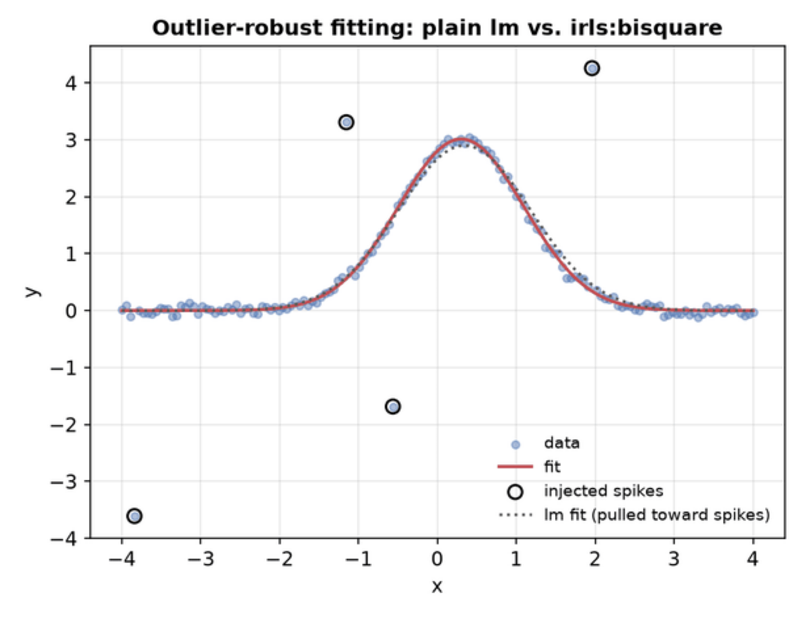
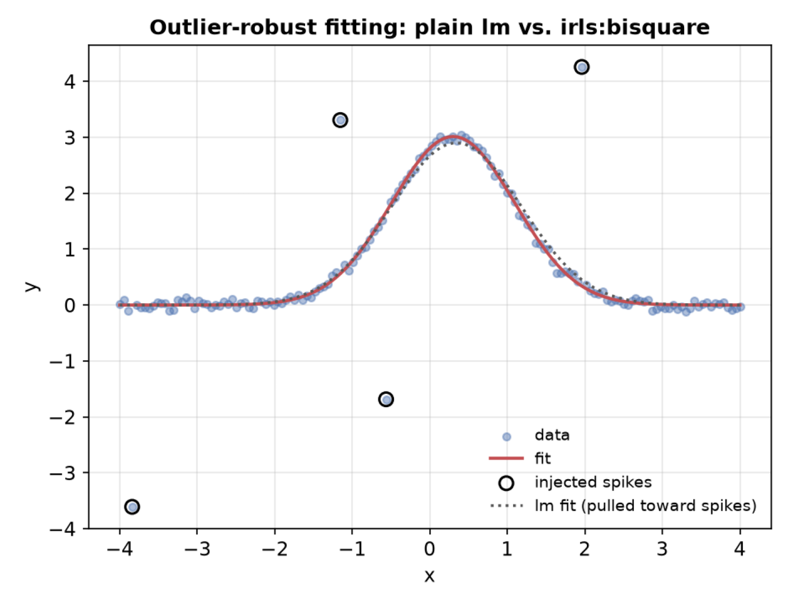
examples/shared_params.py: ok, 0.9 s, 2 fits.
| fit | call | solver | success | stationary | GN | RSS | cond(J^T J) | time | free parameters (value ± stderr) |
|---|---|---|---|---|---|---|---|---|---|
| 1 | fit | default | yes | yes | 6.309e−17 | 0.175 | 51.34 | 3.5 ms | peak2.amplitude 1.986 ± 0.0092; peak1.amplitude 3.01 ± 0.0098; peak1.center −0.001542 ± 0.0024; peak1.sigma 0.5991 ± 0.0018; peak2.sigma 0.5991 ± –; peak2.cente… |
| 2 | fit | default | yes | yes | 6.309e−17 | 0.175 | 51.34 | 0.5 ms | peak1.center −0.001542 ± 0.0024; peak1.amplitude 3.01 ± 0.0098; peak2.amplitude 1.986 ± 0.0092; peak2.center 2.496 ± 0.0037; peak1.sigma 0.5991 ± 0.0018 |
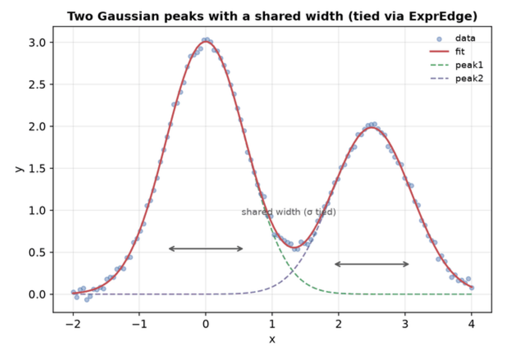
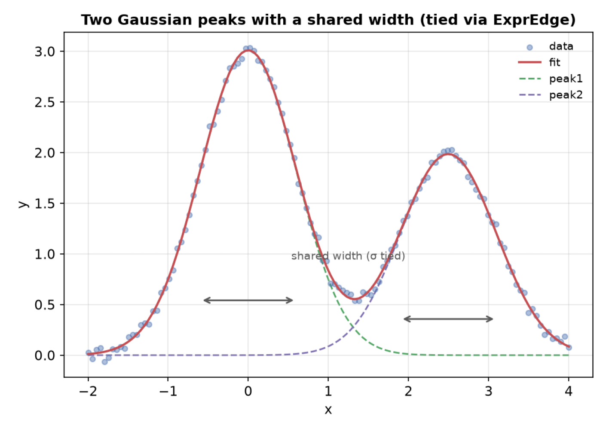
examples/spectrafit_vs_lmfit_complex.py: ok, 2.5 s, 6 fits.
| fit | call | solver | success | stationary | GN | RSS | cond(J^T J) | time | free parameters (value ± stderr) |
|---|---|---|---|---|---|---|---|---|---|
| 1 | fit | default | yes | yes | 2.232e−11 | 1.563 | 1.231e+09 | 19.2 ms | p2.sigma 0.5549 ± 0.024; p3.sigma 0.4204 ± 0.02; bg.slope −0.009038 ± 0.0011; p0.center 284.8 ± 0.0074; p2.fraction 0.4368 ± 0.13; p4.center 289.5 ± 0.022; p1.f… |
| 2 | fit | default | yes | yes | 2.232e−11 | 1.563 | 1.231e+09 | 15.9 ms | p7.center 293.6 ± 0.024; p2.sigma 0.5549 ± 0.024; p2.amplitude 2.611 ± 0.091; p3.amplitude 1.591 ± 0.045; p3.center 288.8 ± 0.01; p6.center 292 ± 0.044; p5.ampl… |
| 3 | fit | default | yes | yes | 2.232e−11 | 1.563 | 1.231e+09 | 15.6 ms | p1.center 285.9 ± 0.016; p1.sigma 0.5875 ± 0.029; p0.center 284.8 ± 0.0074; p4.center 289.5 ± 0.022; p1.fraction 0.3577 ± 0.077; p2.sigma 0.5549 ± 0.024; p7.cen… |
| 4 | fit | default | yes | yes | 2.232e−11 | 1.563 | 1.231e+09 | 15.7 ms | p6.sigma 0.6535 ± 0.047; p7.amplitude 0.5072 ± 0.025; bg.intercept 0.0303 ± 0.31; p1.center 285.9 ± 0.016; p3.center 288.8 ± 0.01; bg.slope −0.009038 ± 0.0011; … |
| 5 | fit | default | yes | yes | 2.232e−11 | 1.563 | 1.231e+09 | 16.6 ms | p4.amplitude 0.8239 ± 0.037; p3.center 288.8 ± 0.01; p2.fraction 0.4368 ± 0.13; p3.amplitude 1.591 ± 0.045; p3.sigma 0.4204 ± 0.02; p7.amplitude 0.5072 ± 0.025;… |
| 6 | fit | default | yes | yes | 2.232e−11 | 1.563 | 1.231e+09 | 15.5 ms | p3.amplitude 1.591 ± 0.045; p3.center 288.8 ± 0.01; bg.slope −0.009038 ± 0.0011; p4.amplitude 0.8239 ± 0.037; p2.sigma 0.5549 ± 0.024; p6.sigma 0.6535 ± 0.047; … |
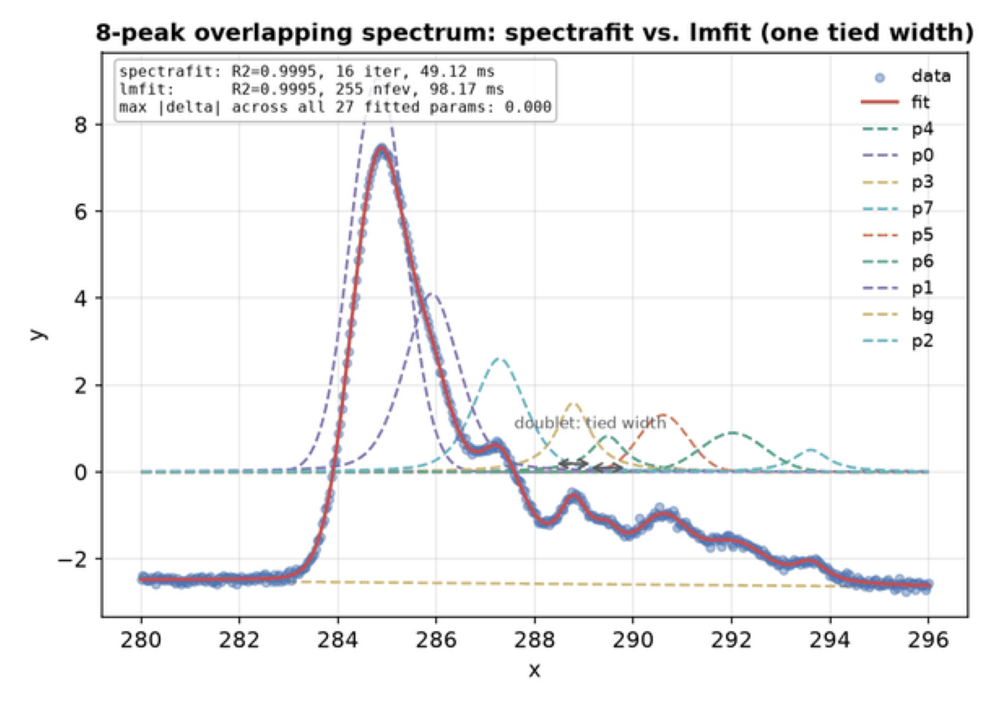
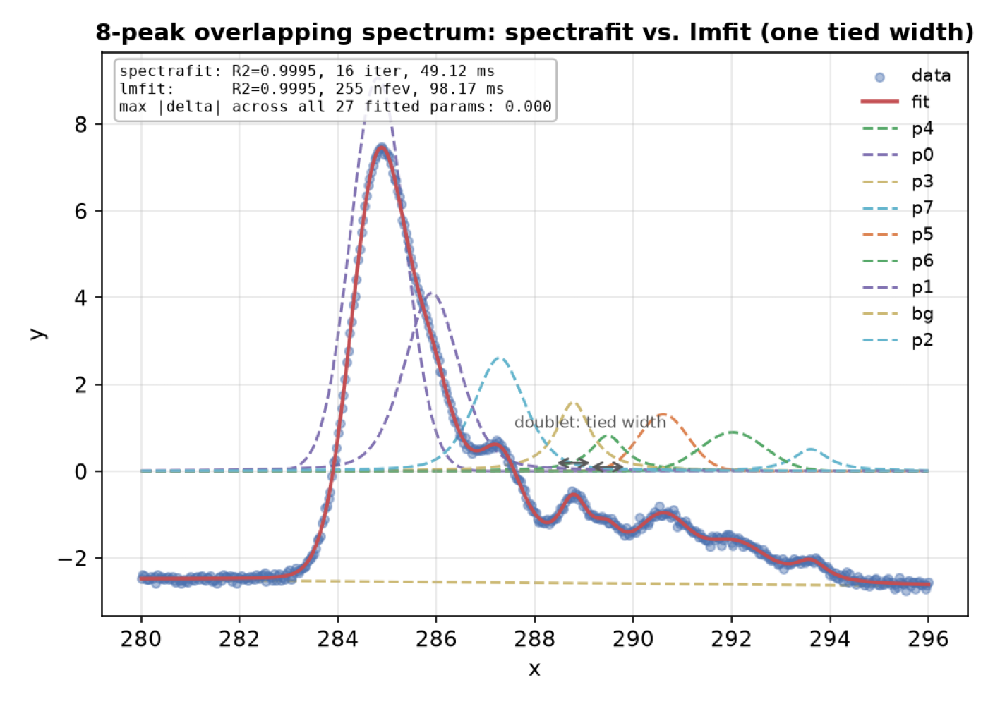
examples/spectrafit_vs_lmfit_moderate.py: ok, 1.5 s, 2 fits.
| fit | call | solver | success | stationary | GN | RSS | cond(J^T J) | time | free parameters (value ± stderr) |
|---|---|---|---|---|---|---|---|---|---|
| 1 | fit | default | yes | yes | 7.731e−14 | 1.008 | 7574 | 5.3 ms | peak4.amplitude 1.573 ± 0.049; peak2.sigma 0.5063 ± 0.009; peak3.sigma 0.9034 ± 0.011; peak4.sigma 0.5595 ± 0.017; peak4.center 6.412 ± 0.011; peak2.amplitude 2… |
| 2 | fit | default | yes | yes | 7.731e−14 | 1.008 | 7574 | 1.5 ms | peak2.amplitude 2.199 ± 0.02; peak1.sigma 0.5988 ± 0.0047; peak1.amplitude 3.014 ± 0.016; peak1.center −0.9996 ± 0.0043; peak3.center 5.005 ± 0.014; peak3.sigma… |
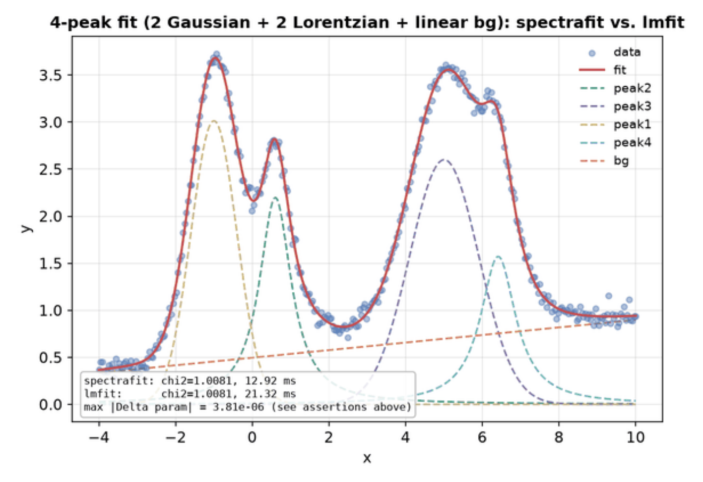
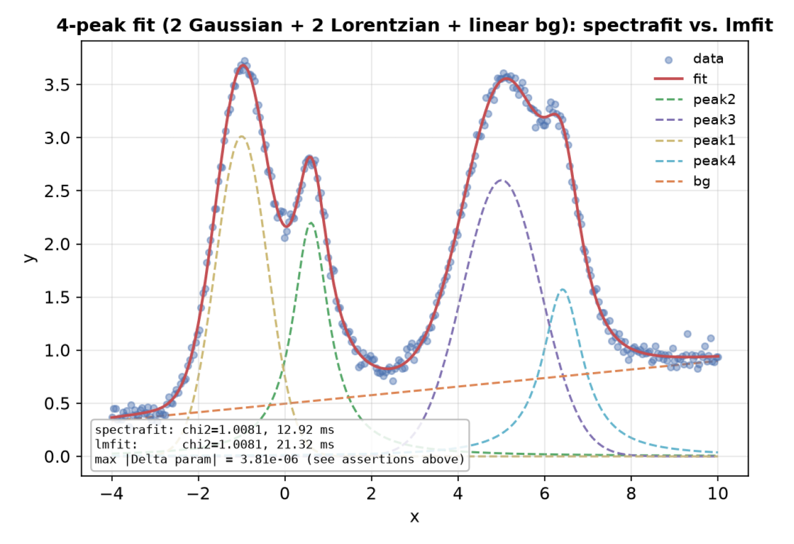
examples/varpro_vs_lm.py: ok, 0.9 s, 20 fits.
| fit | call | solver | success | stationary | GN | RSS | cond(J^T J) | time | free parameters (value ± stderr) |
|---|---|---|---|---|---|---|---|---|---|
| 1 | fit | lm | yes | yes | 3.719e−13 | 0.2439 | 17.66 | 3.4 ms | peak1.center 9.149e−04 ± 0.0032; peak2.center 3.001 ± 0.0053; peak2.amplitude 1.793 ± 0.0075; peak2.sigma 0.9949 ± 0.0058; peak1.amplitude 2.499 ± 0.0088; peak1… |
| 2 | fit | lm | yes | yes | 3.719e−13 | 0.2439 | 17.66 | 0.6 ms | peak1.center 9.149e−04 ± 0.0032; peak1.sigma 0.7007 ± 0.0033; peak2.sigma 0.9949 ± 0.0058; peak2.amplitude 1.793 ± 0.0075; peak1.amplitude 2.499 ± 0.0088; peak2… |
| 3 | fit | lm | yes | yes | 3.719e−13 | 0.2439 | 17.66 | 0.4 ms | peak2.sigma 0.9949 ± 0.0058; peak2.center 3.001 ± 0.0053; peak1.center 9.149e−04 ± 0.0032; peak2.amplitude 1.793 ± 0.0075; peak1.sigma 0.7007 ± 0.0033; peak1.am… |
| 4 | fit | lm | yes | yes | 3.719e−13 | 0.2439 | 17.66 | 0.4 ms | peak1.center 9.149e−04 ± 0.0032; peak1.sigma 0.7007 ± 0.0033; peak2.amplitude 1.793 ± 0.0075; peak2.center 3.001 ± 0.0053; peak2.sigma 0.9949 ± 0.0058; peak1.am… |
| 5 | fit | lm | yes | yes | 3.719e−13 | 0.2439 | 17.66 | 0.4 ms | peak1.center 9.149e−04 ± 0.0032; peak2.center 3.001 ± 0.0053; peak1.sigma 0.7007 ± 0.0033; peak1.amplitude 2.499 ± 0.0088; peak2.amplitude 1.793 ± 0.0075; peak2… |
| 6 | fit | lm | yes | yes | 3.719e−13 | 0.2439 | 17.66 | 0.4 ms | peak2.sigma 0.9949 ± 0.0058; peak1.center 9.149e−04 ± 0.0032; peak1.amplitude 2.499 ± 0.0088; peak2.amplitude 1.793 ± 0.0075; peak2.center 3.001 ± 0.0053; peak1… |
| 7 | fit | lm | yes | yes | 3.719e−13 | 0.2439 | 17.66 | 0.4 ms | peak1.sigma 0.7007 ± 0.0033; peak2.amplitude 1.793 ± 0.0075; peak1.amplitude 2.499 ± 0.0088; peak2.sigma 0.9949 ± 0.0058; peak2.center 3.001 ± 0.0053; peak1.cen… |
| 8 | fit | lm | yes | yes | 3.719e−13 | 0.2439 | 17.66 | 0.4 ms | peak2.center 3.001 ± 0.0053; peak2.sigma 0.9949 ± 0.0058; peak1.amplitude 2.499 ± 0.0088; peak2.amplitude 1.793 ± 0.0075; peak1.sigma 0.7007 ± 0.0033; peak1.cen… |
| 9 | fit | lm | yes | yes | 3.719e−13 | 0.2439 | 17.66 | 0.4 ms | peak1.amplitude 2.499 ± 0.0088; peak2.sigma 0.9949 ± 0.0058; peak2.amplitude 1.793 ± 0.0075; peak1.sigma 0.7007 ± 0.0033; peak2.center 3.001 ± 0.0053; peak1.cen… |
| 10 | fit | lm | yes | yes | 3.719e−13 | 0.2439 | 17.66 | 0.4 ms | peak2.sigma 0.9949 ± 0.0058; peak1.center 9.149e−04 ± 0.0032; peak1.amplitude 2.499 ± 0.0088; peak1.sigma 0.7007 ± 0.0033; peak2.center 3.001 ± 0.0053; peak2.am… |
| 11 | fit | varpro | yes | yes | 9.732e−19 | 0.2439 | – | 0.6 ms | peak2.center 3.001 ± 0.0053; peak1.sigma 0.7007 ± 0.0033; peak1.center 9.149e−04 ± 0.0032; peak2.sigma 0.9949 ± 0.0058; peak2.amplitude 1.793 ± 0.0075; peak1.am… |
| 12 | fit | varpro | yes | yes | 9.732e−19 | 0.2439 | – | 0.6 ms | peak2.sigma 0.9949 ± 0.0058; peak2.amplitude 1.793 ± 0.0075; peak1.amplitude 2.499 ± 0.0088; peak1.center 9.149e−04 ± 0.0032; peak1.sigma 0.7007 ± 0.0033; peak2… |
| 13 | fit | varpro | yes | yes | 9.732e−19 | 0.2439 | – | 0.5 ms | peak2.center 3.001 ± 0.0053; peak2.sigma 0.9949 ± 0.0058; peak1.center 9.149e−04 ± 0.0032; peak1.amplitude 2.499 ± 0.0088; peak2.amplitude 1.793 ± 0.0075; peak1… |
| 14 | fit | varpro | yes | yes | 9.732e−19 | 0.2439 | – | 0.6 ms | peak1.sigma 0.7007 ± 0.0033; peak1.amplitude 2.499 ± 0.0088; peak2.amplitude 1.793 ± 0.0075; peak1.center 9.149e−04 ± 0.0032; peak2.sigma 0.9949 ± 0.0058; peak2… |
| 15 | fit | varpro | yes | yes | 9.732e−19 | 0.2439 | – | 0.6 ms | peak1.center 9.149e−04 ± 0.0032; peak1.sigma 0.7007 ± 0.0033; peak2.center 3.001 ± 0.0053; peak2.amplitude 1.793 ± 0.0075; peak2.sigma 0.9949 ± 0.0058; peak1.am… |
| 16 | fit | varpro | yes | yes | 9.732e−19 | 0.2439 | – | 0.6 ms | peak2.amplitude 1.793 ± 0.0075; peak1.center 9.149e−04 ± 0.0032; peak2.center 3.001 ± 0.0053; peak2.sigma 0.9949 ± 0.0058; peak1.sigma 0.7007 ± 0.0033; peak1.am… |
| 17 | fit | varpro | yes | yes | 9.732e−19 | 0.2439 | – | 0.5 ms | peak2.amplitude 1.793 ± 0.0075; peak1.amplitude 2.499 ± 0.0088; peak1.sigma 0.7007 ± 0.0033; peak1.center 9.149e−04 ± 0.0032; peak2.center 3.001 ± 0.0053; peak2… |
| 18 | fit | varpro | yes | yes | 9.732e−19 | 0.2439 | – | 0.5 ms | peak2.sigma 0.9949 ± 0.0058; peak1.amplitude 2.499 ± 0.0088; peak2.center 3.001 ± 0.0053; peak2.amplitude 1.793 ± 0.0075; peak1.center 9.149e−04 ± 0.0032; peak1… |
| 19 | fit | varpro | yes | yes | 9.732e−19 | 0.2439 | – | 0.6 ms | peak1.center 9.149e−04 ± 0.0032; peak2.sigma 0.9949 ± 0.0058; peak2.center 3.001 ± 0.0053; peak1.amplitude 2.499 ± 0.0088; peak2.amplitude 1.793 ± 0.0075; peak1… |
| 20 | fit | varpro | yes | yes | 9.732e−19 | 0.2439 | – | 0.6 ms | peak2.sigma 0.9949 ± 0.0058; peak2.center 3.001 ± 0.0053; peak1.amplitude 2.499 ± 0.0088; peak1.center 9.149e−04 ± 0.0032; peak1.sigma 0.7007 ± 0.0033; peak2.am… |
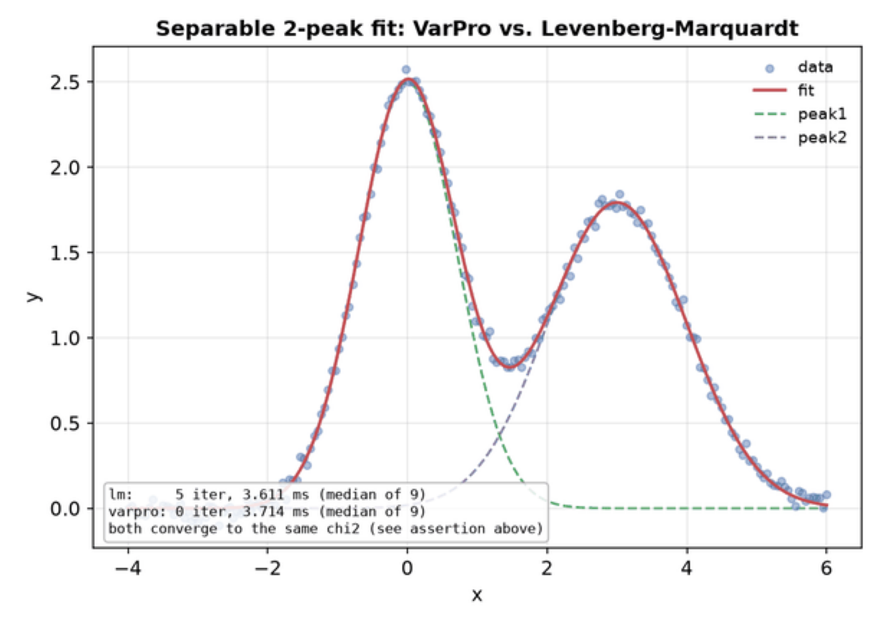
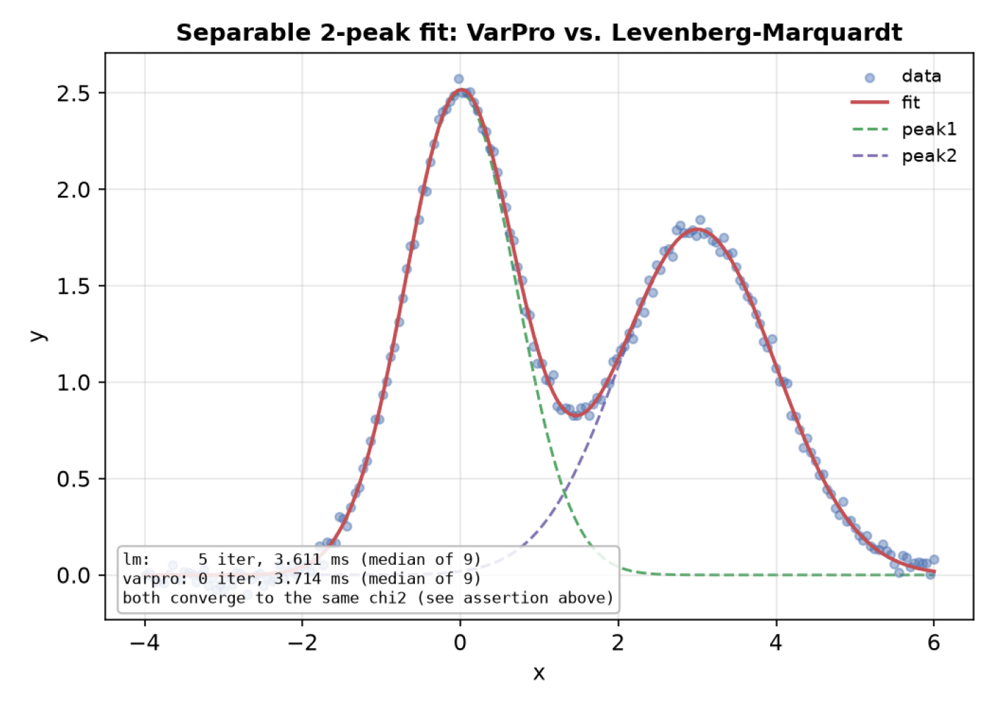
examples/weighted_fitting.py: ok, 0.8 s, 2 fits.
| fit | call | solver | success | stationary | GN | RSS | cond(J^T J) | time | free parameters (value ± stderr) |
|---|---|---|---|---|---|---|---|---|---|
| 1 | fit | default | yes | yes | 7.825e−12 | 479.3 | 2586 | 4.4 ms | peak.sigma 0.6855 ± 0.02; bg.c 4.12 ± 0.35; peak.amplitude 29.59 ± 0.66; peak.center 0.1787 ± 0.016 |
| 2 | fit | default | yes | yes | 1.478e−12 | 112.6 | 2427 | 0.4 ms | peak.sigma 0.7064 ± 0.019; peak.amplitude 29.26 ± 0.85; peak.center 0.1859 ± 0.019; bg.c 3.961 ± 0.21 |
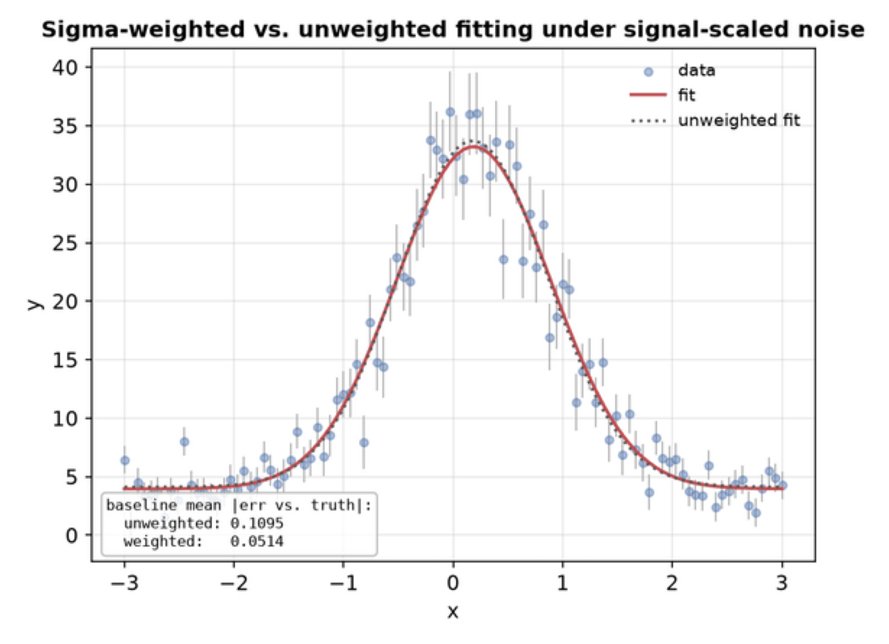
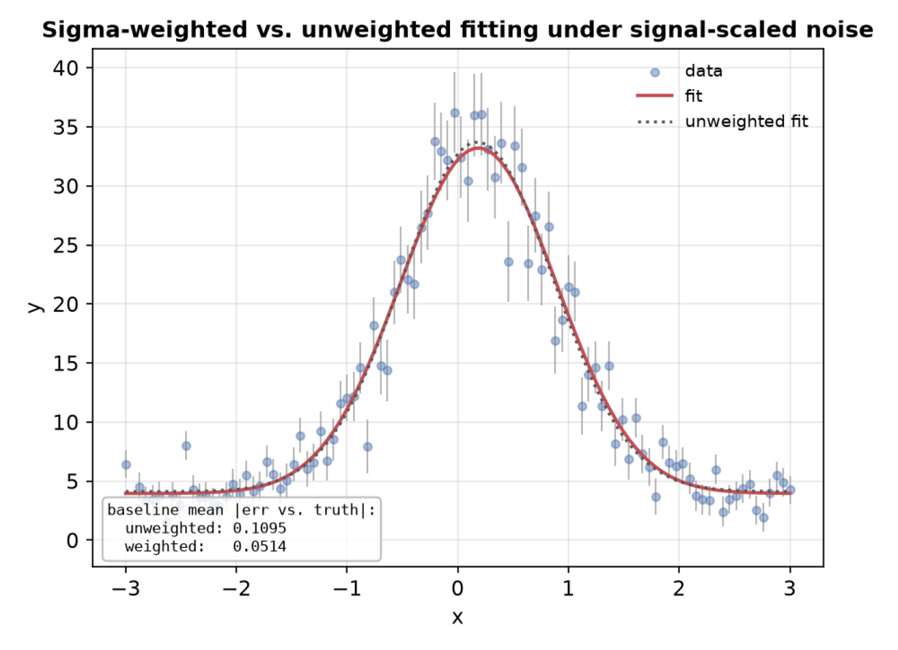